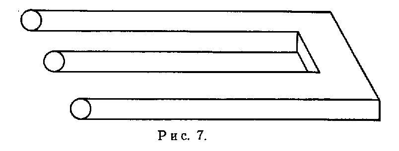
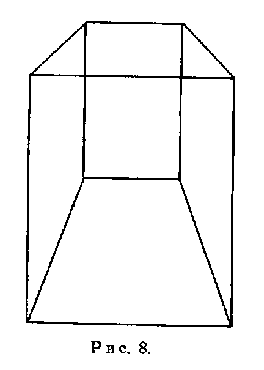
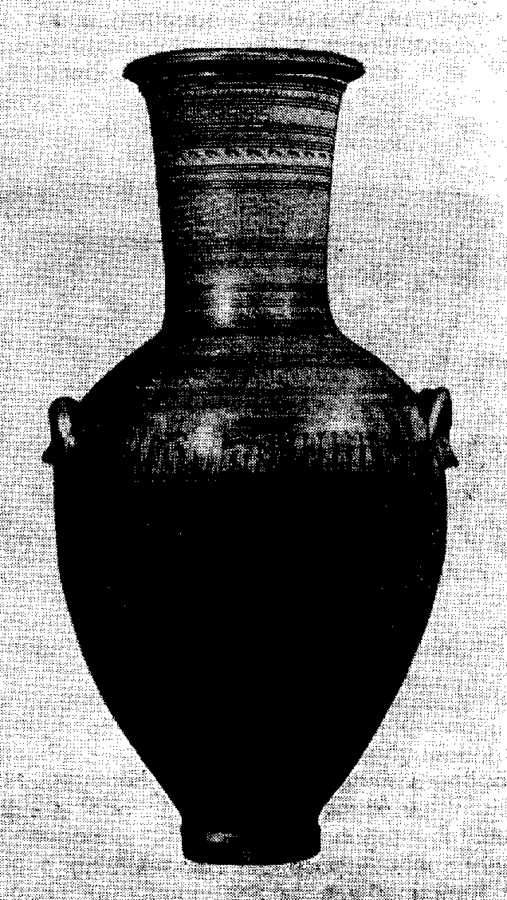
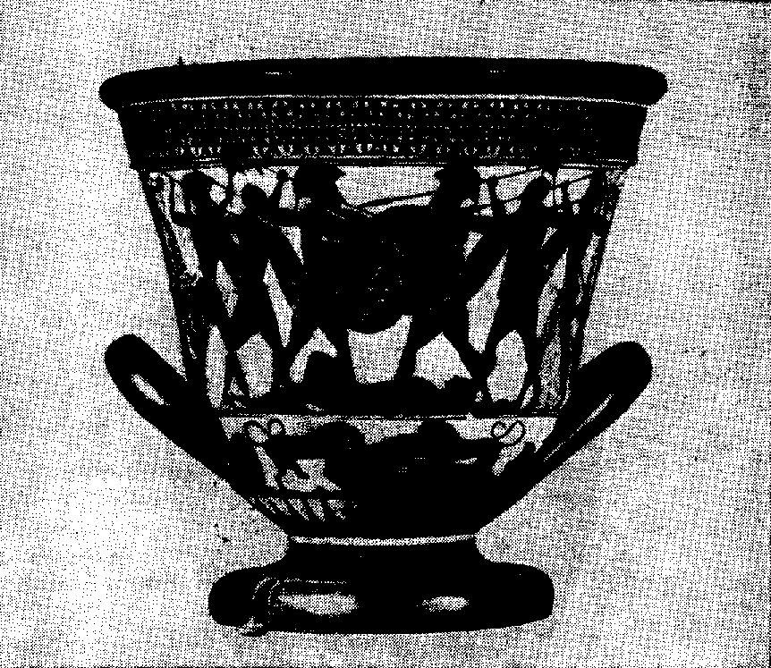
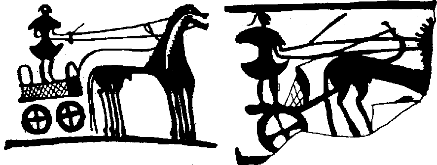
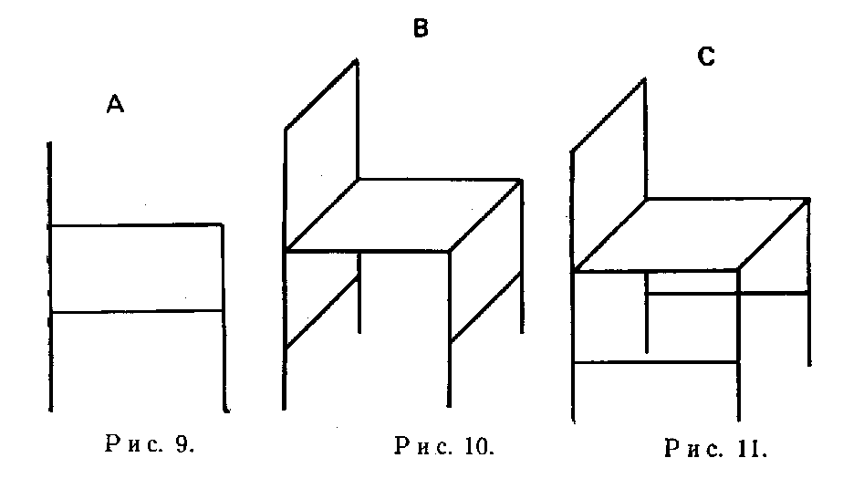
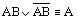
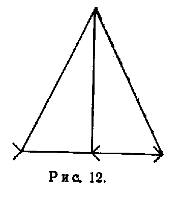
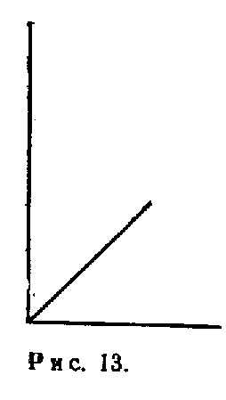
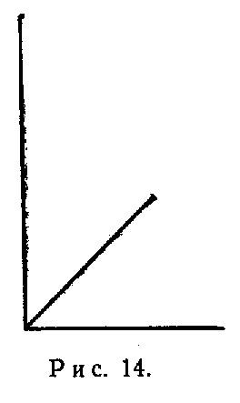

17. Идея несоизмеримости
Кроме того, эти стандарты, включающие сравнение содержания, применимы не всегда. Классы содержания некоторых теорий несравнимы, в том смысле, что между ними нельзя установить ни одного из обычных логических отношений (включения, исключения, пересечения). Так обстоит дело при сравнении мифов с наукой и в наиболее развитых, наиболее общих и, следовательно, наиболее мифических частях самой науки
Я с большой симпатией отношусь к концепции, ясно и изящно сформулированной Уорфом[1] (и предвосхищенной Бэконом), которая утверждает, что языки и схемы реакций, содержащиеся в них, представляют собой не просто инструменты для описания событий (фактов, положений дел), а являются также формообразующими матрицами событий (фактов, положений дел) и что их “грамматика” содержит некоторую космологию, всеобъемлющее воззрение на мир, общество и положение в нем человека[2], которое оказывает влияние на мышление, поведение и восприятие людей[3]. Согласно Уорфу, космология языка отчасти выражается посредством явно используемых слов, однако она также опирается на классификации, “которые не имеют явных обозначений... но действуют через незримый “центр обмена” соединительными связями так, что детерминируют другие слова, обозначающие классы”[4]. Так, “род имен существительных, таких, как мальчик, девочка, отец, жена, дядя, женщина, дама, включая тысячи даваемых им имен, например Джордж, Фред, Мери, Чарли, Изабелла, Исидора, Джейн, Джон, Алиса, Алоис, Эстер, Лестер и т. п., хотя и не имеет отличительного признака особого рода, подобно латинским -us или -а, тем не менее каждое из таких слов устойчиво связано с абсолютно точным словом “он” или “она”, которые, однако, лишь подразумеваются до тех пор, пока ситуация не потребует их явного выражения”[5].
Скрытые классификации (которые благодаря своей неявной природе “скорее чувствуются, чем понимаются, — осознание [их] носит интуитивный характер”[6], — которые “вполне могут быть более рациональными, нежели явно выраженные классификации”[7], и которые могут быть весьма “тонкими” и не иметь связи “с какой-либо важной дихотомией”[8]) создают “устойчивое противодействие значительному отклонению точек зрения”[9]. Если такое противодействие направлено не против признания истинными противостоящих альтернатив, а против самого допущения об их существовании, то мы получим пример несоизмеримости.
Я думаю также, что такие научные теории, как теория движения Аристотеля, теория относительности, квантовая теория, классическая и современная космологии, являются достаточно общими, “глубокими” и разработанными для того, чтобы их можно было уподобить естественным языкам. Дискуссии, которые подготавливают переход к новой эпохе в физике или астрономии, вряд ли ограничиваются обсуждением явных особенностей ортодоксальной концепции. Они часто обнаруживают скрытые идеи, заменяют их идеями другого сорта и изменяют как явные, так и неявные классификации. Анализ “аргумента башни”, осуществленный Галилеем, привел к более ясной формулировке аристотелевской теории пространства и одновременно обнаружил различие между импетусом (абсолютной величиной, присущей объекту) и моментом (который зависит от избранной системы отсчета). Эйнштейновский анализ одновременности выявил некоторые особенности ньютоновской космологии, которые, хотя и не были осознаны, все-таки оказывали влияние на все рассуждения относительно пространства и времени. В то же время Нильс Бор установил, что физический мир нельзя рассматривать как совершенно независимый от наблюдателя, но принял идею независимости, которая была частью классической физики[10]. Обращая внимание на случаи, подобные упомянутым, мы понимаем, что научные рассуждения действительно могут встречать “устойчивое сопротивление”[11], и можем предполагать, что несоизмеримость будет встречаться также и среди теорий.
(Поскольку несоизмеримость зависит от глубинных классификаций и предполагает важные концептуальные изменения, постольку вряд ли можно дать ее явное определение. Обычные “реконструкции” не способны извлечь ее на поверхность. На феномен несоизмеримости следует указать, а затем с помощью разнообразнейших примеров подготовить читателя к тому, чтобы он сам мог судить о нем. Именно такой метод будет принят в настоящей главе[12].)
Интересные случаи несоизмеримости встречаются уже в области восприятия. (Это неудивительно, если вспомнить соображения, высказанные в гл. 14.) При подходящих воздействиях, но при разных системах классификации (разных “психических установках”) наш перцептивный аппарат способен создавать столь разные перцептивные объекты, что их трудно сравнивать[13]. Непосредственная оценка невозможна. Мы можем сравнить две позиции в памяти, но не в момент концентрации внимания на одном и том же рисунке. Первый из приведенных ниже рисунков идет еще дальше. Он порождает такие перцептивные объекты, которые не отрицают в то же время других перцептивных объектов, и вместе с тем не позволяют сформировать вообще никакого объекта (заметим, что средний цилиндр постепенно исчезает по мере того, как мы продвигаемся слева направо). Здесь даже память не помогает нам вполне рассмотреть альтернативы.
 Каждый рисунок, обладающий даже очень небольшой перспективой, обнаруживает это свойство: мы можем направить наше внимание на сам лист бумаги, на который нанесены линии, — тогда у нас не будет трехмерного изображения; с другой стороны, мы можем попытаться исследовать свойства изображения — в этом случае поверхность листа исчезает или превращается в то, что можно назвать иллюзией. И нет способа “ухватить” переход от одного к другому[14]. Во всех этих случаях чувственный образ зависит от “психических установок”, которые можно изменять по собственному желанию, не прибегая к помощи наркотиков, гипноза или перестройки сознания. Однако психические установки могут застывать благодаря болезни, в результате воспитания в рамках определенной культуры или выхода из-под нашего контроля физиологических факторов. (Далеко не каждое изменение языка сопровождается изменениями перцепции.) Наше отношение к представителям других рас или иных культур часто зависит от “застывших” установок второго рода: научившись “прочитывать” внешний вид некоторым стандартным образом, мы высказываем стандартные оценки и ошибаемся.
Интересный пример физиологически детерминированных установок, приводящих к несоизмеримости, дает развитие человеческого восприятия. Как показали Пиаже и его школа[15], восприятие ребенка проходит в своем развитии различные стадии, прежде чем достигнет относительно устойчивой зрелой формы. На одной из стадий объекты ведут себя подобно послеобразам и вызывают к себе соответствующее отношение. Ребенок следит глазами за объектом до тех пор, пока тот не исчезнет; он не делает ни малейшей попытки вернуть его, даже если это требует минимального физического (или интеллектуального) усилия, даже если это усилие уже вполне доступно для ребенка. Здесь нет никакого стремления к поиску объекта, и, говоря “концептуально”, это вполне понятно. В самом деле, было бы бессмысленно “искать” послеобраз, ибо его “понятие” не предусматривает для этого никаких операций.
 Формирование понятия и чувственного образа материального объекта резко изменяет ситуацию. Происходит коренное преобразование схем поведения и, как можно предположить, мышления. Послеобразы и подобные им явления все еще существуют, однако теперь их трудно обнаружить, и для этого требуются специальные методы (следовательно, более ранний мир визуальных объектов буквально исчезает)[16]. Эти методы опираются на новую концептуальную схему (послеобразы существуют только в человеческом сознании и не принадлежат физическому миру) и не могут точно реконструировать явления предыдущей стадии. (Поэтому реконструированные феномены следует называть иным именем, скажем “псевдопослеобразами” — весьма интересная перцептивная аналогия для перехода, например, от ньютоновской механики к специальной теории относительности.) Ни послеобразы, ни псевдопослеобразы не имеют места в новом мире. Они не рассматриваются, например, как свидетельства, на которые опирается новое понятие материального объекта. Их нельзя использовать и для объяснения этого понятия: послеобразы появляются вместе с ним, зависят от него и отсутствуют в мышлении тех, кто еще не осознает материальных объектов. Псевдопослеобразы исчезают тотчас же, как только происходит такое осознание. Поле чувственного восприятия никогда не содержит послеобразов вместе с псевдопослеобразами. Следует допустить, что каждая стадия в развитии чувственного восприятия обладает некоторым “базисом” наблюдения, на который обращают особое внимание и из которого получают совокупность утверждений. Однако этот базис а) изменяется при переходе от одной стадии развития к другой, и б) он является лишь частью концептуального аппарата каждой данной стадии, а не единственным источником интерпретаций, как хотели бы уверить нас некоторые эмпирики.
Рассматривая эти соображения, мы можем предположить, что семейства понятий, концентрирующиеся вокруг понятий “материальный объект” и “псевдопослеобраз”, несоизмеримы именно в том смысле, который здесь обсуждается. Эти семейства не могут использоваться в одно и то же время, и между ними нельзя установить ни логических, ни перцептивных связей.
Разумно ли предполагать, что концептуальные и перцептивные изменения такого рода возможны только в детстве? Можем ли мы радоваться тому факту — если это действительно факт, — что взрослый человек привязан к устойчивому перцептивному миру и к соответствующей устойчивой концептуальной системе, которую во многих отношениях он может изменять, но общие особенности которой всегда остаются неизменными? Не будет ли более реалистичным допустить, что фундаментальные изменения, приводящие к несоизмеримости, возможны и для взрослого и что их нужно стимулировать, чтобы не закрыть нам путь к тому, что может оказаться высшей стадией развития нашего сознания и познания? Кроме того, вопрос об изменчивости зрелой стадии в любом случае является эмпирическим вопросом, требующим исследования, и его нельзя решить с помощью методологического установления[17]. Попытка прорвать границы данной концептуальной системы и сбросить “попперианские очки”[18] является существенной частью такого исследования (а также существенной частью всякой интересной жизни).
Такая попытка представляет собой нечто большее, чем затянувшееся “критическое обсуждение”[19] — пережиток эпохи Просвещения, в который мы должны верить. Нужна способность создать и осознать новые перцептивные и концептуальные отношения, включая те, которые непосредственно не даны (скрытые отношения, см. выше), а этого нельзя достигнуть одним лишь критическим обсуждением (см. гл. 1 и 2). Конечно, ортодоксальные подходы ограничены (физическими) теориями (скорее тощими карикатурами на них)[20], они не рассматривают скрытых отношений, влияющих на значение теории, игнорируют перцептивные изменения, а то, что остается, истолковывают в соответствии с жесткими стандартами, так что любое обсуждение каких-либо необычных идей сразу же останавливается рутинными реакциями. Однако теперь вся эта фаланга стандартных ответов находится под сомнением. Каждое понятие, входящее в них, вызывает подозрение, в частности такие “фундаментальные” понятия, как “наблюдение”, “проверка” и, конечно, само понятие “теория”. Что же касается слова “истина”, то на данном этапе мы можем лишь отметить, что оно, безусловно, волнует людей, но ничего большего не дает. В таких обстоятельствах лучше всего использовать примеры, выходящие за рамки стандартных реакций. По этой причине я решил рассматривать средства выражения, отличные от языков и теорий, и развивать терминологию в связи с этими средствами. В частности, я буду анализировать стили в изобразительном искусстве. Мы обнаружим, что не существует таких “нейтральных” объектов, которые представимы посредством любого стиля и которые можно использовать в качестве объективного критерия для оценки принципиально разных стилей. Применение этих идей к языкам очевидно.
“Архаический стиль”, как он определен Э. Леви в его работе о древнегреческом искусстве[21], обладает следующими особенностями:
1) структура и движение фигур, а также их отдельных частей ограничены немногими типичными схемами; 2) индивидуальные формы стилизованы, имеют тенденцию к определенному порядку и “выполнены с... точным абстрагированием”[22] от несущественных деталей; 3) изображение формы зависит от контура, который может сохранять значение независимой линии или формы границ силуэта. “Силуэтам могло быть придано некоторое число положений: они могли стоять, маршировать, грести, бежать, сражаться, умирать, оплакивать... Однако их существенная структура должна быть всегда ясной”[23]; 4) цвет дан лишь намеком, а оттенки света и тени отсутствуют; 5) как правило, фигуры показывают свои части (и их крупные элементы) в их наиболее полном аспекте, даже если это нарушает композицию и “пространственные взаимоотношения”. Частям придается известное значение даже тогда, когда это противоречит их видимому отношению к целому[24]; поэтому 6) за немногими четко установленными исключениями, фигуры, входящие в композицию, располагаются таким образом, чтобы избежать их наложения друг на друга, и объекты, находящиеся один за другим, располагаются друг рядом с другом; 7) окружающая обстановка изображаемой сцены (горы, облака, деревья и т. п.) либо совершенно игнорируется, либо упрощается до предела. Действие образует самодостаточную единицу типичных сцен (битв, похорон и т. п.)[25].
Эти стилистические элементы, различные модификации которых можно найти в детских рисунках, во “фронтальном” искусстве древних египтян, в раннем греческом искусстве, а также у малоразвитых народов, Леви объясняет, опираясь на психологические механизмы: “Наряду с образами, которые реальность представляет физическому глазу, существует совершенно иной мир образов, которые живут или, лучше сказать, становятся живыми только в нашем мышлении и которые, хотя и внушены реальностью, совершенно преобразованы. Каждый простейший акт рисования... пытается воспроизвести эти образы, и только их, с инстинктивной закономерностью физической функции”[26]. Архаический стиль изменяется в результате “громадного числа целенаправленных наблюдений природы, которые модифицируют чисто мыслительные образы”[27], дают толчок движению к реализму и, таким образом, начинают историю искусства. Для архаического стиля и его изменения существуют естественные, физиологические основания.
Остается неясным, почему воспроизводить образы памяти более “естественно”, чем образы восприятия, которые являются гораздо более четкими и устойчивыми[28]. Мы обнаруживаем также, что реализм часто предшествует более схематичным способам изображения. Так было в древнекаменном веке[29], в искусстве Древнего Египта[30], в геометрическом искусстве Аттики[31]. Во всех перечисленных случаях “архаический стиль” представляет собой скорее результат сознательного усилия (которому, несомненно, могут способствовать или препятствовать неосознанные склонности и физиологические законы), чем естественную реакцию на воздействие внешних стимулов[32]. Поэтому вместо того, чтобы заниматься поисками психологических причин некоторого “стиля”, мы должны в первую очередь постараться обнаружить его элементы, подвергнуть анализу их функции, сравнить их с другими явлениями той же культуры (литературным стилем, построением предложений, грамматикой, идеологией) и таким образом выявить лежащее в его основе мировоззрение, включая понимание того способа, которым это мировоззрение влияет на восприятие, мышление, аргументацию, и тех границ, которые оно ставит воображению. Мы увидим, что такой анализ основополагающего мировоззрения дает гораздо лучшее понимание процесса концептуального изменения, чем натуралистический подход или избитые фразы типа “критическое обсуждение и сравнение... различных структур всегда возможно”[33]. Конечно, какой-то вид сравнения всегда возможен (например, одна физическая теория может звучать гораздо более мелодично, когда ее читают вслух под аккомпанемент гитары, чем другая теория). Однако попробуйте установить особые правила для процесса сравнения, такие, например, как правила логики в применении к отношению содержательных классов, и вы тотчас же обнаружите исключения, излишние ограничения и каждый раз будете вынуждены сомневаться в своих утверждениях. Гораздо более интересно и поучительно исследовать, какие виды объектов могли быть названы (представлены), а какие — не могли быть названы (представлены), если это сравнение осуществляется в рамках точно определенной и. исторически укрепившейся структуры. В ходе такого исследования мы должны пойти дальше общих положений и изучить структуры более детально. Я начну с обсуждения нескольких примеров архаического стиля.
Иллюстрация В говорит о следующих характеристиках человеческой фигуры: “Люди очень высокие и тонкие, туловище имеет вид треугольника, суживающегося к талии, голова шарообразная с выпуклостью на месте лица: к концу периода существования этого стиля голова становится более живой — схематично изображается шар головы, и точка обозначает глаз”[34]. Все или почти все части тела изображаются в профиль и соединяются вместе, как части кукол. Они не объединены в органичное целое. Эта “аддитивность” архаического стиля с наибольшей четкостью проявляется в трактовке глаза. Глаз не принимает участия в действиях тела, не руководит им и не придает смысла контакту тела с окружающей обстановкой; глаз не “смотрит”. Он просто добавляется к профилю головы, подобно некоторому условному знаку, как если бы художник хотел сказать: “Наряду со всем прочим — ногами, руками, ступнями — у человека есть также глаза, которые расположены по одному на каждой стороне лица” (см. илл. А и С, которые показывают “фронтальное” расположение глаза). Точно так же и особые состояния тела (жизнь, смерть, болезнь) указаны не соответствующим расположением его частей, а изображением стандартного тела в различных стандартных позициях. Тело мертвого человека, например, лежащего на похоронной колеснице (иллюстрация В), изображено точно так же, как тело стоящего человека, но повернуто на 90 градусов и помещено на саване и под крышкой гроба[35].

Илл. А. Аякс и Ахилесс, играющие в кости. Ватиканский музей

Илл. В. Ваза из Диплонского захоронения. Афины, середина 8 в. до н. э.
Не отличаясь от тела живого человека, оно вдобавок просто изображено в положении смерти. Другой пример — рисунок козленка, пожираемого львом[36]. Лев выглядит свирепым, козленок — мирным, а акт съедения просто присоединяется к представлению о том, что есть лев и что есть козленок. (Мы имеем здесь дело с механическим конгломератом: всем элементам такого конгломерата придано равное значение, единственное отношение между ними — отношение последовательности; не существует никакой иерархии, ни одна часть не подчинена другим и не детерминирована ими.) Рисунок говорит: вот свирепый лев и мирный козленок, вот пожирание козленка львом.

Илл. С. Ваза с изображением воинов. Микенский акрополь, ок. 1200 г. до н. э. Национальный музей. Афины
Стремление выделить каждую существенную часть ситуации часто приводит к разделению тех частей, которые в действительности соединены. Так, на иллюстрации D возница изображен стоящим над тележкой (которая представлена в своем полном виде) и не закрытым ее боковой стенкой, так что можно ясно видеть его ноги, дно и стенку тележки. Это не вызывает беспокойства, если мы рассматриваем данный рисунок как наглядное перечисление частей некоторого события, а не как изображение самого воспринимаемого события (беспокойства не возникает, если мы говорим: его ноги соприкасаются с дном тележки, которое является прямоугольным, и он окружен боковыми стенками...[37]). Но такого рода интерпретации нужно учиться; ее нельзя просто вычитать из рисунка.

Илл. D. Деталь иллюстрации С. Возницы на повозках
Это обучение может потребовать значительного труда. Некоторые египетские рисунки можно расшифровать лишь с помощью самого изображенного объекта или его трехмерного представления (скульптуры людей, животных и т. п.). Опираясь на эту информацию, мы узнаем (рис. 9—11), что стул на фигуре А представляет объект фигуры С, а не фигуры В и что его нужно понимать так: “Стул со спинкой и четырьмя ножками, которые скреплены”, причем понятно, что передние ножки соединены с задними[38]. Интерпретация групп предметов является еще более сложной, и некоторые случаи до сих пор остаются непонятными[39].

Способность “читать” определенный стиль включает в себя также знание о том, какие свойства несущественны. Отнюдь не каждая особенность архаического изображения имеет смысловое значение, как не каждая особенность написанного предложения играет роль в выражении его содержания. Этого не учли греки, которые впервые начали задумываться над “величественными позами” египетских статуй (об этом высказывался уже Платон). Такой вопрос “мог бы озадачить египетского художника, как озадачил бы нас вопрос о возрасте или о настроении короля на шахматной доске”[40]. Таковы некоторые особенности архаического стиля. Стиль можно описывать и анализировать различными способами. Данное выше описание обращает внимание на формальные особенности: архаический стиль дает наглядное перечисление вещей, части которых располагаются приблизительно так, как они встречаются в “природе”, за исключением тех случаев, когда такое расположение могло бы скрыть важные элементы. Все части находятся на одном уровне, и предполагается, что мы “прочитываем” перечни предметов, а не “видим” их, как это происходит в случае чувственного восприятия ситуации[41]. Эти перечни организованы отношением ”стой последовательности, т. е. вид некоторого элемента не зависит от наличия других элементов (добавление льва и акта пожирания не делает козленка несчастным; добавление процесса умирания не делает человека ослабевшим). Архаические рисунки представляют собой сочетания рядоположенностей (paratactic aggregates), а не целостные системы. Элементами подобных сочетаний могут быть физические части, например головы, руки, колеса; это могут быть положения дел, например факт смерти человека; наконец, это могут быть действия, например действие поедания пищи.
Вместо того чтобы описывать формальные особенности некоторого стиля, мы можем обратиться к описанию онтологических особенностей того мира, который состоит из элементов, представленных в стиле и упорядоченных определенным образом. Мы можем также описывать то впечатление, которое некоторый мир производит на зрителя. Так поступает художественный критик, анализирующий поведение персонажей, изображенных художником, и их “внутреннюю жизнь”, на которую должно указывать это поведение. Дж. Хэнфман[42] пишет об архаических фигурах: “Независимо от того, Нисколько оживленны и воодушевлены архаические герои, они не производят впечатления, что движутся по своей собственной воле. Их жесты являются объяснительными формулами, навязанными актерам извне для объяснения того, какое происходит действие. Решающей же помехой для убедительного изображения внутренней жизни является необычайная обособленность архаического взгляда. Взгляд показывает, что личность живет, но он не соответствует требованиям конкретной ситуации. Даже в тех случаях, когда архаический художник достигает успеха в изображении юмористического или трагического настроения, эти искусственные жесты и отстраненный взгляд напоминают преувеличенное оживление кукольного спектакля”.
Онтологическое описание часто добавляет к формальному анализу лишь малосодержательные рассуждения, которые представляют собой не более чем упражнения в остроумии и “чувствительности”. Однако не следует упускать из виду возможность того, что некоторый конкретный стиль дает точное изображение мира, как его воспринимали художник и современники, и что каждая формальная особенность соответствует (скрытым или явным) предположениям, включенным в фундаментальную космологию. (Для случая архаического стиля мы не должны отвергать возможность того, что в ту эпоху человек действительно чувствовал себя куклой, руководимой внешними силами, и что он соответствующим образом видел и понимал своих соотечественников[43].) Такая реалистическая интерпретация стилей и других изобразительных средств находится в одном ряду с тезисом Уорфа относительно того, что, будучи инструментами описания событий (которые могут обладать еще и другими свойствами, не охватываемыми каким-либо описанием), языки вдобавок еще представляют собой формы событий (так что существует некоторый лингвистический предел того, что может быть высказано в данном языке, и этот предел совпадает с пределами самой вещи)[44]. Реалистическая интерпретация представляется весьма правдоподобной, хотя ее нельзя считать доказанной[45].
Ее нельзя считать несомненной, ибо существуют технические ошибки, узко специфические цели (карикатура), способные изменить некоторый стиль, не затрагивая космологии. Следует также помнить о том, что у всех людей приблизительно один и тот же нейрофизиологический аппарат, так что восприятие нельзя изменить в каком угодно направлении[46]. И в некоторых случаях мы действительно можем показать, что отклонения от “точного воспроизведения природы” встречаются при наличии детального знания объекта и наряду с более “реалистическими” изображениями: в мастерской скульптора Тутмоса в Тель-аль-Амарне (древний Ахет-Атон) имеются маски, снятые непосредственно живых моделей и сохраняющие все детали строения головы (вмятины) и лица, а также скульптурные изображения головы, созданные на основе таких масок. Некоторые из имеющихся изображений сохраняют индивидуальные детали, в других они устранены и заменены более простыми формами. Наиболее ярким примером такой манеры изображения является совершенно стилизованная голова египтянина. Это показывает, что “по крайней мере некоторые художники сознательно сохраняли независимость по отношению к натуре”[47]. Способ изображения дважды претерпел изменение в период правления Аменофиса IV (1364 — 1347 гг. до н. э.). Первое изменение, направленное в сторону большего реализма, произошло всего лишь через четыре года после его восшествия на престол. Это показывает, что техническая способность к реалистическому изображению существовала и могла быть легко использована, однако сознательно не развивалась. Следовательно, логический переход от стиля (или языка) к космологии и видам восприятия требует специального обоснования и не может рассматриваться как очевидный. (Аналогичное замечание справедливо для любого перехода от признанных научных теорий, таких, как теория относительности или концепция движения Земли, к космологии и видам восприятия.)
Требуемое обоснование (которое никогда не может стать окончательным) заключается в указании на характерные черты, проявляющиеся в далеких друг от друга областях, Если особенности некоторого конкретного стиля живописи можно обнаружить также в скульптуре и грамматике существующих языков (а здесь, в частности, в неявных классификациях, которые трудно изменить), если можно показать, что этими языками в равной мере пользуются художники и обычные люди, если существуют философские принципы, сформулированные на этих языках, которые провозглашают, что данные особенности являются свойствами самого мира, а не внесены в него человеком, и ставят вопрос об их источнике, если человек и природа сохраняют эти особенности не только в живописи, но и в поэзии, в распространенных поговорках и обычаях, если мысль о том, что данные особенности являются элементами нормального восприятия, не противоречит тому, что нам известно из физиологии или психологии восприятия, если более поздние мыслители нападают на данные особенности как на “ошибки”, обусловленные незнанием “истинного пути”, то можно допустить, что мы имеем дело не с техническими особенностями и частными целями, а с последовательным способом жизни и что люди, участвовавшие в этом способе жизни, видели мир точно таким, каким он показан нам в их рисунках. По-видимому, все эти условия выполнены в архаической Греции: формальная структура и идеология греческого эпоса, восстанавливаемые по текстам и позднейшим ссылкам, повторяют все характерные черты позднего геометрического и раннего архаического стиля[48].
Начать с того, что около девяти десятых гомеровского эпоса составляют формулы, представляющие собой стандартные фразы, вырастающие из одного или двух слов в разные законченные строчки и повторяющиеся в соответствующих местах[49]. Пятая часть текста поэм Гомера состоит из строчек, которые целиком повторяются много раз. В 28000 строк этих поэм содержится около 25000 повторяющихся фраз. Повторения встречаются уже в придворной поэзии Микен, и их можно проследить в поэзии восточных дворов: “Титулы богов, властителей и людей должны быть переданы правильно, а в дворцовом мире принцип правильного выражения мог быть расширен. Царская корреспонденция является в высшей степени формальной, и эта формальность, начиная с поэтических сцен, изображающих прием послов, постепенно распространяется и приводит к формулам, употребляемым в речах. Аналогично действия описываются в определенном порядке, независимо от того, присутствует ли на самом деле этот порядок или нет, и эта манера распространяется на другие описания, которые внутренне лишены упорядоченности. Все эти регламентации исходят непосредственно от царского двора, поэтому разумно предположить, что двор получал удовольствие от такого формализма в поэзии”[50]. Условия жизни при (шумерском, вавилонском, урартском, хеттском, финикийском, микенском) дворах объясняют также наличие стандартных элементов содержания (типичные сцены: властитель и знать на войне и в мирное время; детали обстановки: описание красивых вещей), которые, перемещаясь от города к городу и даже пересекая национальные границы, повторялись и приспосабливались к местным условиям.
Постепенно формирующееся соединение постоянных переменных элементов, явившееся результатом многочисленных приспособлений такого рода, было использовано неграмотными поэтами древнегреческого “средневековья”, которые разработали язык и формы выражения так, чтобы те лучше служили требованиям устного творчества. Необходимость запоминать требовала наличия легко воспроизводимых описаний событий, которые мог использовать поэт, творивший в уме и не записывавший своих произведений. Соблюдение размера требовало, чтобы основные описательные фразы были пригодны для использования их в различных частях строки и для придания ей завершенности: “В отличие от поэта, записывающего свои строчки... [поэт-сказитель] лишен возможности неторопливо обдумать свое следующее слово, он не может изменить сделанного и перечитать того, что было создано раньше... Он должен иметь в своем распоряжении группы слов, пригодные для его стихов”[51]. Экономия требует, чтобы для каждой данной ситуации и при определенных условиях размера (для начала, середины или конца строки) существовал единственный способ продолжения рассказа, и это требование выполняется с удивительной точностью: “Все главные персонажи «Илиады» и «Одиссеи», если их имена могут быть вставлены во вторую половину строфы вместе с эпитетом” имеют эпитет, выраженный именем существительным в именительном падеже и начинающийся с простого согласного звука, который вставляется между цезурой третьей стопы хорея и концом строфы: например, polutlaV dioV OdusseuV (“многострадальный Одиссей”). Из тридцати семи персонажей, которым приданы формулы данного типа, включающие в себя все то, что имеет какое-либо значение для поэм, имеется лишь три имени, которым придана вторая формула, способная замещать первую”[52]. “Если в пяти грамматических случаях вы возьмете единственное число всех существительных, входящих в формулу эпитетов для Ахиллеса, то вы обнаружите, что получили сорок пять разных формул, из которых ни одна не имеет того же метрического значения в одном и том же случае”[53]. При таких условиях поэт гомеровской эпохи “не был заинтересован в оригинальности выражения или в разнообразии. Он использовал или приспосабливал унаследованные формулы”[54]. У него не было “выбора, и он даже не думал о выборе; для каждой данной части строки, независимо от того, о чем шла речь, запас формул сразу же давал ему готовую комбинацию слов”[55].
Используя формулы, поэт гомеровской эпохи изображает типичные сцены, описывая объекты посредством “добавления частей к вереницам готовых слов”[56]. Идеи, которые сегодня мы рассматриваем как логически подчиненные другим идеям, формулировались в отдельных, грамматически независимых суждениях. Пример (Илиада, 9.556): Мелеагр “у супруги законной лежал, Клеопатры прекрасной, от Евенины рожденной, прекраснолодыжной Марпессы, и от Идаса, который в то время средь всех земнородных самый могучий был муж. За жену молодую Марпессу на самого Аполлона властителя лук свой он поднял. С этого времени в доме отец и почтенная матерь дочь Алкионой прозвали, на память о том...” (перевод В. Вересаева. — Прим. ред.), и так далее на протяжении десяти с лишним строк и двух или трех тем перед главной остановкой. Эта черта присоединительности (paratactic feature), характерная для гомеровской поэзии и соответствующая отсутствию разработанной системы соподчиненных предложений на ранней ступени развития греческого языка[57], делает ясным, почему Афродита названа “улыбколюбивой”, в то время как она слезно жалуется на то, что ее ранили (Илиада, 5.375), или почему Ахиллес назван “быстроногим”, в то время как он сидя разговаривает с Приамом (Илиада, 24.559). Это напоминает позднегеометрическую роспись керамики (“архаический” стиль Леви), в которой мертвое тело изображается как живое, находящееся в положении смерти (см. выше текст к прим. 35), или сцену пожирания козленка, в которой живой и мирный козленок изображается в соответствующем положении по отношению к пасти свирепого льва. Аналогично этому жалующаяся Афродита есть просто Афродита — улыбающаяся богиня, помещенная в ситуацию жалобы, в которой она, однако, принимает участие только внешне, не изменяя своей природы.
Аддитивная трактовка событий наиболее выпукло проявляется в случаях (человеческого) движения. В «Илиаде», 22.398, Ахиллес тащит за собой тело Гектора: “Тучею пыль над влачимым взвилась, растрепались черные волосы, вся голова, столь прекрасная прежде, билась в пыли”, т. е. процесс волочения включает в себя состояние биения как некоторую независимую часть, которая вместе с другими частями образует движение[58]. Выражаясь более абстрактно, мы могли бы сказать, что для поэта “время составлено из моментов”[59]. Большая часть сравнений опирается на предположение о том, что составные части сложной сущности живут своей собственной жизнью и легко могут быть отделены от нее. Геометрический человек представляет собой наглядный перечень частей и положений, гомеровский человек составлен из конечностей, поверхностей, связей, выделенных посредством сравнения их с неодушевленными объектами точно определенного вида: туловище Гипполоха покатилось, подобно ступе, после того как Агамемнон отрубил ему руки и голову (Илиада, 11.146; olmoV — круглый камень цилиндрической формы), тело Гектора крутится, как волчок (Илиада, 14.412), голова Горгифиона поникла, “как маковый цвет поникает средь сада головкой, и семенною коробкой, и вешним дождем отягченной” (Илиада, 8.303)[60], и т. д. К тому же и формулы эпической поэмы, в частности комбинации эпитетов-существительных, часто используются не в связи с содержанием, а в соответствии с требованиями размера: “Зевс предстает то наводящим ужас громовержцем, то добрым богом-отцом не в связи с тем, что он делает, а в связи с требованиями размера. Юн оказывается тучегонителем Зевсом не в те моменты, когда он действительно повелевает облаками, а тогда, когда это словосочетание должно заполнить метрическую единицу È — È ——”[61]. Точно так же художник геометрического стиля способен нарушить пространственные соотношения — например, ввести контакт там, где его нет, или разорвать его, когда он реально существует, — с тем чтобы рассказать о наблюдаемой истории в свойственной ему специфической манере. Вот так поэт повторяет формальные черты, свойственные художникам геометрического и раннего архаического стиля. По-видимому, никто из них не признает “фундаментальной субстанции”, которая скрепляет объекты и формирует их части так, что они отображают то “высшее единство”, к которому принадлежат.
Этого “высшего единства” нельзя найти и в понятиях языка. Например, не существует выражения, которое можно было бы использовать для описания человеческого тела как отдельной сущности[62]. Soma означает торс тела, demas есть винительный падеж спецификации; это слово означает “в структуре” или “с точки зрения образа”; слово limbs встречается там, где сегодня мы говорим о теле (guia — члены тела, приводимые в движение целым; melea — члены тела в их телесной мощи; lelunto guia — потрясение всего тела; idroV ek melewn erren — его тело преисполнено силы). Все, что мы получаем из этого описания, — это кукла, составленная из более или менее четко выделенных частей.
Эта кукла не обладает душой в нашем смысле слова. Как “тело” представляет собой механическую совокупность членов, торса, движения, так и “душа” является суммой “психических” событий, которые вовсе не обязательно должны быть личными и могут принадлежать разным индивидам. “В своих описаниях мыслей или эмоций Гомер никогда не идет дальше чисто пространственного, или количественного, определения; никогда он не пытается выявить их особую, нефизическую природу”[63]. Действия стимулируются не “автономном Я”, а другими действиями, событиями, происшествиями, включая божественное вмешательство. И воспринимаются психические события именно таким образом[64]. Сновидения, необычные психические проявления, например внезапное воспоминание о чем-либо, акты неожиданного узнавания, внезапный порыв жизненной энергии во время битвы, во время стремительного бегства, вспышка гнева и т. п. не только объяснялись ссылками на богов и демонов, но и переживались как вызванные последними. Сон Агамемнона, “повеленье [Зевса] услышав, отправился” (Илиада, 2.16). Отправился сам сон, а не некоторый образ во сне, и “стал у него в головах, уподобившись сыну Нелея Нестору” (Илиада, 2.20). Человек не имеет сновидения (сон не является “субъективным” событием), а видит его (это “объективное” событие) и видит также, как сон приходит и уходит[65]. Неожиданный страх, прилив сил описываются и переживаются как божественные акты[66]: “Доблесть же смертных Кронид то уменьшит, а то увеличит, как пожелается сердцу его: могучее всех он” (Илиада, 20.241). Приведенная фраза не является объективным описанием (которое можно распространить на поведение животных), она выражает ощущение того, что изменение осуществляется извне: “Преисполнил того и другого великою силой” (Илиада, 13.60). В наши дни такие события либо прочно забыты, либо считаются совершенно случайными[67]. “Однако для Гомера и вообще для древнего мышления не существовало такой вещи, как случай”[68]. Каждое событие имеет объяснение. Это делает события более четкими, усиливает их объективные свойства, формирует их по образцу знания богов и демонов и, таким образом, превращает в мощную поддержку того божественного механизма, который используется для их объяснения: “Боги существуют. Осознание того, что для древних греков это было фактом, является первым условием понимания их религии и культуры в целом. Знание об их существовании опирается на (внутренний или внешний) опыт восприятия либо самих богов, либо действий богов”[69].
Суммируем: архаический мир был гораздо менее компактным, нежели тот мир, который окружает нас, и воспринимался как менее компактный. У архаического Человека отсутствовало “физическое” единство, его “тело” было составлено из множества частей, членов, поверхностей, связей; и у него отсутствовало “духовное” единство, его “мышление” было составлено из различных событий, некоторые из которых даже не были “духовными” в нашем смысле этого слова, а присутствовали в теле-марионетке как дополнительные элементы или вносились в него извне. События не формируются индивидом, а представляют собой сложное распределение частей, в которое на подходящее место вставляется тело-марионетка[70]. Именно такое мировоззрение возникает в результате анализа формальных особенностей “архаического” искусства и поэзии Гомера, соединенного с анализом понятий, которые поэт гомеровской эпохи использовал для описания того, что он видел. Индивиды, использовавшие эти понятия, чувственно воспринимали главные черты своего мира. Эти индивиды действительно жили в том мире, который изображали их художники.
Дальнейшее подтверждение данного предположения можно получить из анализа их “метаустановок”, таких, как общие религиозные установки и “теории” (установки) познания.
Упомянутое выше отсутствие компактности воспроизводится в области идеологии. Существует терпимость в религиозных вопросах — та терпимость, которую более поздние поколения сочли морально и теоретически неприемлемой и которая даже в наши дни рассматривается как проявление поверхностного и незрелого мышления[71]. Архаический человек был религиозным эклектиком, он не выступал против богов и мифов других народов, а спокойно добавлял их к существующему содержанию мира, не пытаясь осуществить синтез или устранить противоречия. Не было жрецов, не было догм, не существовало категорических утверждений о богах” человеке, мире[72]. (Эту терпимость еще можно найти у ионийских натурфилософов, которые разрабатывали свои идеи бок о бок с мифами и не пытались устранять последние.) Религиозной “морали” в нашем смысле не существовало, и боги еще не стали абстрактным воплощением вечных принципов[73]. Это произошло позднее, в течение архаической эпохи, и в итоге боги “потеряли [свою] человечность”. С тех пор олимпизм в его морализованной форме постепенно превращается в религию страха, и эта тенденция нашла отражение в религиозном словаре. В «Илиаде» нет слова для обозначения “страха божьего”[74]. Вот так происходит дегуманизация жизни, которую некоторые люди склонны именовать “моральным” или “научным” прогрессом.
Аналогичные замечания справедливы и для “теории познания”, неявно включенной в раннее мировоззрение. Музы в «Илиаде» (2.284) обладают знанием потому, что они близки вещам и им не нужно опираться на слухи, а также потому, что им известно все множество тех вещей, на которые последовательно направляется внимание автора. “Количество, а не глубина является стандартом суждения” и знания у Гомера[75], что выясняется из таких слов, как polufrwn o polumhtiV — “многодумающий” и “многомыслящий”, а также из более поздних критических высказываний, например “многознание ему не научает”[76]. Живой интерес к окружающему миру и стремление понять многие удивительные явления (такие, как землетрясения, затмения Солнца и Луны, неожиданные разливы Нила) приводили к тому, что каждое явление получало свое собственное объяснение, которое не опиралось на универсальные принципы. Эта манера сохранялась в описаниях ионийцев VIII и VII (и более поздних) столетий до н. э. (которые просто перечисляют племена, встречавшиеся во время путешествия, их привычки или особенности береговой линии). Даже такой мыслитель, как Фалес, довольствуется тем, что фиксирует много интересных наблюдений и высказывает множество отдельных объяснений, не пытаясь объединить их в цельную систему[77]. (Первым мыслителем, создавшим “систему”, был Анаксимандр, который следовал Гесиоду.) При таком понимании знание получают не с помощью попыток уловить сущность, лежащую в основе чувственных впечатлений. Для этого нужно: 1) поместить наблюдателя в правильное положение относительно объекта (процесса, совокупности), поставить его на подходящее место в той сложной структуре, которая образует мир; 2) суммировать элементы, которые можно заметить в этих обстоятельствах. Познание есть результат сложного осмотра, осуществляемого с удобного наблюдательного пункта можно подвергнуть сомнению неясное сообщение или сообщение, полученное из вторых рук, однако невозможно усомниться в том, что ясно видишь собственными глазами. Нарисованный или описанный объект представляет собой подлинный порядок элементов, который может включать в себя явления, связанные с перспективой[78]. Тот факт, что весло в воде выглядит сломанным, не имеет здесь той скептической силы, которую ему приписывает другая идеология[79]. Как сидящий Ахиллес не вызывает у нас сомнений в том, что он быстроногий, — в сущности, мы могли бы начать сомневаться в его быстроногости только в том случае, если бы оказалось, что он в принципе не способен сидеть, — точно так же изгиб весла в воде не заставит нас усомниться в том, что в воздухе оно является совершенно прямым, — в сущности, мы могли бы усомниться в том, что оно прямое, только если бы в воде оно не выглядело изогнутым[80]. Изгиб весла в воде отнюдь не является аспектом, который противоречит другому аспекту и тем самым разрушает наше понимание природы весла, это — отдельная часть (ситуации) реального весла, которая не только совместима с его прямолинейностью, но даже требует ее. Таким образом, мы видим, что объекты познания оказываются столь же аддитивными, как и наглядные перечни архаического художника и ситуации, описываемые архаическим поэтом.
Не существует сколько-нибудь единой концепции познания[81]. Громадная совокупность самых различных слов использовалась для выражения того, что сегодня мы считаем разными формами познания или разными способами получения знания. Слово sofia[82] означало знания и опыт в определенной профессии (плотника, певца, полководца, врача, возничего, борца), включая различные виды искусства (причем художник оценивается не как выдающийся творец, а как мастер своего дела); слово eidenai, буквально “увиденное” [having seen], говорит о знании, полученном в результате осмотра; слово dunihmi, встречающееся в «Илиаде», хотя часто переводится как “слушание” или “понимание”, по своему содержанию является более сильным, так как включает в себя мысль о повиновении: тот, кто слышит, понимает и действует в соответствии с услышанным. И так далее. Многие из этих выражений предполагают установку на восприятие со стороны познающего субъекта; в своих действиях он повторяет поведение окружающих его вещей, следует им[83]; он действует так, как это подобает сущности, помещенной на то место, которое он занимает.
Повторим и сделаем вывод: изобразительные средства, использовавшиеся в Греции раннего архаического периода, нельзя рассматривать как выражение некомпетентности или особых художественных интересов, они дают верное представление о том, в чем именно чувствовал, видел, мыслил фундаментальные особенности мира человек архаической эпохи. Этот мир является открытым. Его элементы не скреплены и не сформированы некоторой “фундаментальной субстанцией”; они не считаются просто явлениями, из которых при достаточной проницательности можно вывести существование этой субстанции. Иногда они объединяются в группы. Отношение отдельного элемента к группе, в которую он входит, подобно отношению части к совокупности частей и не похоже на отношение части к главенствующему целому. Отдельная совокупность, называемая “человеком”, иногда посещается “психическими событиями”. Такие события могут жить в нем самом, но способны и проникать в человека извне. Подобно любому другому объекту, человек представляет собой скорее точку пересечения различных влияний, чем неповторимый источник деятельности, некоторое “Я” (в этом мире у “cogito” Декарта нет точки приложения, поэтому его аргумент был бы лишен исходного пункта). Имеется большое сходство между этой точкой зрения и космологией Маха, за исключением одного: элементами архаического мира были легко узнаваемые физические и психические образы и события, в то время как элементы Маха носят более абстрактный характер — они представляются еще неизвестными целями исследования, а не его объектами. Таким образом, характерные единицы архаического мировоззрения допускают реалистическую интерпретацию, выражают стройную, последовательную онтологию, и для них справедливы соображения Уорфа.
Здесь я прерву свои рассуждения, с тем чтобы высказать некоторые замечания в связи с предшествующим обсуждением проблем философии науки.
1. Могут возразить, что ракурс и другие указания на перспективу являются столь очевидными чертами нашего перцептивного мира, что они просто не могли отсутствовать в перцептивном мире древних. Следовательно, архаическая манера изображения неполна, а ее реалистическая интерпретация неправомерна.
Ответ: перспектива не представляет собой очевидной черты нашего перцептивного мира, если не уделять ей специального внимания (в эпоху фотографии и кинематографа это случается довольно часто). Если мы не являемся профессиональными фотографами, создателями кинофильмов, художниками, то мы воспринимаем вещи, а не аспекты. Быстро двигаясь среди сложных объектов, мы замечаем в них гораздо меньше изменений, чем заметили бы при восприятии аспектов. Аспекты и ракурсы, если они вообще проникают в наше сознание, обычно подавляются нами, точно так же как подавляются послеобразы, когда завершен соответствующий этап перцептивного развития[84] и их можно заметить только в особых ситуациях[85]. В Древней Греции такие ситуации возникали в театре у зрителей первых рядов на представлениях волнующих произведений Эсхила и Агатарха. Существует целая школа, которая именно театру приписывает решающее влияние на развитие перспективы[86]. Кроме того, почему перцептивный мир древних греков должен совпадать с нашим? Для обоснования этого возражения требуются гораздо более серьезные аргументы, чем ссылка на несуществующую форму восприятия.
2. Читатель должен обратить внимание на метод, использованный для обоснования особенностей архаической космологии. В принципе этот метод совпадает с методом антрополога, анализирующего мировоззрение некоторого племенного объединения. Вполне заметные различия обусловлены бедностью свидетельств и частными условиями их получения (письменные источники, произведения искусства; отсутствие личного контакта). Взглянем более внимательно на метод, используемый в обоих случаях.
Антрополог, пытающийся открыть космологию изучаемого им племени и способы отображения ее в языке, в искусстве и в повседневной жизни (проблема инструментализм — реализм), сначала изучает язык и основные социальные привычки; он исследует, как они связаны с другими видами деятельности, включая и такие prima facie маловажные действия, как доение коров и приготовление пищи[87]; он пытается установить ключевые идеи[88]. Его внимание к мелочам обусловлено не педантичным стремлением к полноте, а осознанием того, что детали, которые выглядят несущественными в одном способе мышления (и восприятия), могут играть важную роль в другом. (Различия в карандашно-бумажных операциях между сторонниками Лоренца и сторонниками Эйнштейна чаще всего незначительны, если их вообще можно заметить, однако они выражают серьезное столкновение идеологий.)
Обнаружив ключевые идеи, антрополог пытается понять их. Он делает это точно так же, как когда-то добивался понимания своего собственного языка, включая язык той специальной профессии, которая обеспечивает ему заработок. Он интериоризует эти идеи таким образом, чтобы их связи прочно запечатлелись в памяти и в реакциях и по желанию могли быть воспроизведены. “Туземное общество должно войти в самого антрополога, если он хочет его понять, а не только в его записные книжки”[89]. Этот процесс следует оберегать от внешних влияний. Например, исследователь не должен пытаться получить лучшее понимание идей племени, сравнивая их с известными идеями, или искать более широких, более точных идей. Он ни в коем случае не должен прибегать к “логической реконструкции”. Такая процедура привязала бы его к уже известному или к тому, что поддерживается какими-то группами, и навсегда преградила бы ему путь к пониманию той неизвестной идеологии, которую он исследует.
Завершив свое исследование, антрополог оказывается носителем как своей собственной, так и туземной культуры и теперь может перейти к их сравнению. Сравнение показывает, может ли быть воспроизведен изучаемый способ мышления в европейских терминах (если существует единственное множество “европейских терминов”) и обладает ли он своей собственной логикой, не обнаруживаемой ни в одном из европейских языков, В процессе такого сравнения антрополог может выразить некоторые туземные идеи на английском языке, Из этого не следует, что независимо от сравнения английский язык сам по себе соизмерим с туземными выражениями. Это означает, что можно изменять языки в самых разных направлениях и что понимание не зависит от какого-либо отдельного множества правил.
3. Анализ ключевых идей проходит различные стадии, ни одна из которых не приводит к полной ясности. Исследователь должен установить твердый контроль над своим стремлением к ясности и логическому совершенству. Он никогда не должен пытаться сделать некоторое понятие более ясным, чем это допускает материал (за исключением тех случаев, когда это предпринимается временно с целью дальнейшего исследования), Именно материал, а не его логическая интуиция, должен определять содержание понятий. Рассмотрим пример. Ньюэ [Nuer], племя, живущее в долине Нила и исследованное Эванс-Притчардом, пользуется интересными пространственно-временными понятиями[90]. Исследователь, плохо знакомый с мышлением Ньюэ, сочтет эти понятия “неясными и недостаточно точными”. Чтобы улучшить дело, он может попытаться эксплицировать их, использовав для этого понятия специальной теории относительности. Такая процедура может привести к ясным понятиям, однако они уже не будут понятиями Ньюэ. С другой стороны, если он хочет получить понятия, которые являются ясными и в то же время принадлежат Ньюэ, он должен сохранять неопределенность и неполноту ключевых понятий до тех пор, пока не появится дополнительная информация, т. е. пока в сферу изучения не попадут недостающие элементы, которые сами по себе являются, быть может, столь же неясными, как и ранее обнаруженные элементы.
Каждая порция информации представляет собой “строительный блок понимания, а это означает, что ясность должна быть результатом обнаружения новых блоков в языке и идеологии изучаемого племени, а не плодом преждевременных определений. “... Ньюэ... не могут говорить о времени как о чем-то таком, что иногда бывает реальным, что проходит, чего можно ожидать, что можно экономить и т. д. Я не думаю, чтобы они когда-либо переживали такое же чувство борьбы со временем или наличие действий, согласованных с абстрактным отрезком времени, поскольку объектами преференции у них являются главным образом сами действия, которые в общем носят неторопливый характер...”[91] Утверждения подобного рода либо являются строительными блоками — и в этом случае их собственное содержание неполно и не вполне понятно, — либо выражают пробные попытки предугадать структуру совокупности всех блоков. В последнем случае их нужно проверять и совершенствовать посредством обнаружения новых блоков, а не с помощью логических прояснений (ребенок усваивает значение нового слова, опираясь не на его логическое прояснение, а на осознание того, как оно соединяется с вещами и другими словами). Недостаток ясности у отдельного антропологического утверждения чаще всего свидетельствует о недостатке материала, а не о расплывчатости логических интуиций антрополога.
4. Высказанные замечания применимы и к моей попытке исследовать несоизмеримость. В конкретных науках несоизмеримость тесно связана со значением. Поэтому изучение несоизмеримости в науке приводит к утверждениям, содержащим термины, относящиеся к значению, однако эти термины не вполне понятны, как не вполне понятен термин “время” в приведенной выше цитате. И замечание о том, что высказывать такие утверждения можно только после создания ясной теории значения[92], столь же правомерно, как и замечание о том, что утверждения о времени племени Ньюэ, которые дают материал, приводящий к пониманию представлений Ньюэ о времени, можно высказывать только после того, как такое понимание достигнуто. Мое рассуждение опирается, разумеется, на предположение о том, что антропологический метод применим к изучению структуры науки (и уж коли на то пошло — любой другой формы жизни).
5. За этот предмет отвечают логики. Они указывают на то, что анализ значений и отношений между терминами представляет собой задачу логики, а не антропологии. Правда, под “логикой” можно подразумевать по крайней мере две различные вещи. “Логика” может означать изучение, или результаты изучения, структур, свойственных определенному типу рассуждения. Но это слово может обозначать и отдельную логическую систему или множество систем.
Изучение первого вида принадлежит антропологии. Для того чтобы увидеть, например, является ли тождество  частью “логики квантовой теории”, мы должны изучить квантовую теорию. А поскольку квантовая теория не божественная эманация, а создание людей, постольку мы вынуждены изучать ее в той форме, в которой обычно представлены создания людей, т. е. мы должны изучать исторические документы: учебники, оригинальные статьи, отчеты о конференциях и частных беседах, письма и тому подобное. (В случае с квантовой теорией наше положение облегчается тем, что племя теоретиков квантовой механики еще не вымерло. Поэтому историческое исследование можно дополнить антропологическими полевыми исследованиями.)
Следует согласиться с тем, что сами по себе эти документы не детерминируют единственного решения нашей проблемы[93]. Но разве кто-нибудь на это надеется? Исторические свидетельства также не детерминируют единственного решения исторических проблем, однако никто не считает, что вследствие этого ими можно пренебречь. Документы, безусловно, необходимы для логического исследования, которое здесь имеется в виду. Вопрос в том, как их нужно использовать.
Мы хотим раскрыть структуру той области рассуждения, о которой документы не дают полного представления. Мы стремимся изучить эту область, ни в коей мере не изменяя ее. В обсуждаемом примере нас вовсе не интересует вопрос о том, использует ли усовершенствованная квантовая механика будущего принцип или способна ли наша собственная изобретательность или небольшая “реконструкция” изменить эту теорию так, чтобы она согласовалась с некоторыми предумышленными принципами современной логики и легко давала ответ на вопрос об использовании указанного принципа. Мы хотим знать, использует ли этот принцип та квантовая теория, которая реально разрабатывается физиками. Нас интересует работа физиков, а не реконструкторов. А эта работа вполне может содержать противоречия и пробелы. Ее “логика” (в том смысле, в котором я здесь употребляю этот термин) вполне может быть “нелогичной” с точки зрения одной из систем формальной логики.
Сформулировав наш вопрос таким образом, мы понимаем теперь, что на него нельзя дать какого-либо ответа. Не может существовать одна-единственная “квантовая теория”, которая равным образом используется всеми физиками. Различия между Бором и, скажем, фон Нейманом приводят к мысли о том, что существование такой теории весьма сомнительно. Для проверки этой мысли нам нужно проанализировать конкретные случаи. Анализ же конкретных случаев может привести нас к выводу, согласно которому теоретики в области квантовой механики расходятся между собой так же далеко, как католики и протестанты различных сект: они почитают одну и ту же книгу (хотя даже это сомнительно, если сравнить Дирака с фон Нейманом), однако убеждены, что занимаются разными вещами.
Потребность антропологического изучения научной области, в которой на первый взгляд господствует единый миф, остающийся неизменным и всегда одинаково употребляемым, указывает на то, что наше распространенное знание о науке может быть существенно неполным. Оно даже может оказаться совершенно ошибочным (на некоторые ошибки было указано в предыдущих главах). В этих условиях единственно надежный путь заключается в том, чтобы признать свое невежество, отбросить реконструкции и начать изучение науки с самого начала. Мы должны подойти к ее изучению так, как антрополог подходит к изучению психических нарушений у знахарей вновь открываемых племен. И нам нужно быть готовыми к тому открытию, что эти нарушения окажутся чрезвычайно нелогичными (при оценке их с точки зрения формальной логики) и что они должны быть чрезвычайно нелогичными, чтобы функционировать так, как они это делают.
6. Однако лишь немногие из философов науки интерпретируют слово “логика” в таком смысле. Лишь немногие философы готовы допустить, что базисные структуры, лежащие в основе некоторых вновь открытых способов речи, могут радикально отличаться от базисных структур самых известных систем формальной логики; и абсолютно никто не готов согласиться с тем, что это может оказаться справедливым также и для науки. “Логика” (в обсуждаемом здесь смысле) отдельного языка или теории чаще всего непосредственно отождествляется с особенностями одной из логических систем без учета исследования адекватности такого отождествления. Например, проф. Гедимин понимает под “логикой” свою любимую систему, которая довольно широка, но ни в коем случае не является всеобъемлющей. (Например, она не включает в себя идей Гегеля, и ее нельзя использовать для их выражения. И среди математиков некоторые выражают сомнение в том, что она пригодна для выражения неформальной математики.) Логическое изучение науки, в понимании Гедимина и согласных с ним логиков, сводится к изучению множеств формул этой системы, их структуры, свойств их элементарных конституент (интенсионал, экстенсионал и т. п.), их последовательностей и возможных моделей. Если такое изучение не приводит к тем особенностям, которые антрополог обнаруживает, скажем, в науке, то это свидетельствует либо о том, что наука страдает определенными недостатками, либо о том, что антрополог не знает логики. Для логика в этом втором смысле не имеет ни малейшего значения то обстоятельство, что его формулы не похожи на научные утверждения, что они используются не так, как используются научные утверждения, и что наука просто не смогла бы двигаться по тем простым направлениям, которые он способен понять (и поэтому считает единственно допустимыми). Он либо не замечает этой разницы, либо объясняет ее недостатками, которые должны быть устранены при правильном подходе. Ему никогда не приходит в голову мысль о том, что эти “недостатки” способны выполнять важные функции и что прогресс науки мог бы оказаться невозможным после их устранения. Наука для него есть аксиоматика плюс теория моделей плюс правила соответствия плюс язык наблюдения.
При таком способе действия бессознательно предполагается, что антропологическое исследование, открывающее нам явные и скрытые классификации науки, уже завершено и что оно свидетельствует в пользу аксиоматического (и т. д. и т. п.) подхода. Однако такое исследование даже и не проводилось. А имеющиеся на сегодняшний день фрагментарные результаты, полученные главным образом усилиями Хэнсона, Куна, Лакатоса и других, показывают, что логический подход “отбрасывает не отдельные малосущественные аксессуары науки, а те важнейшие ее особенности, которыми обусловлен прогресс науки и, следовательно, само ее существование.
7. Обсуждения значения, о которых я упоминал выше, являются еще одной иллюстрацией недостатков логического подхода. Для Гедимина, посвятившего этому вопросу две длинные сноски, данный термин и его производные, например термин “несоизмеримость”, являются “неясными и недостаточно точными”[94]. Я согласен с этим. Гедимин хочет сделать эти термины более ясными и стремится лучше понять их. Я опять согласен. Ту ясность, отсутствие которой чувствует Гедимин, он пытается получить посредством экспликации в терминах одной из систем формальной логики и двуслойной модели языка, ограничивая обсуждение “интенсионалом” и “экстенсионалом”, как это принято в избранной им логике. Здесь между нами начинается расхождение. Вопрос вовсе не в том, какой вид имеют “значение” и “несоизмеримость” в некоторой частной логической системе. Вопрос в том, какую роль они играют в (реальной, нереконструированной) науке. Увеличение ясности должно достигаться за счет более тщательного изучения этой роли, а пробелы следует восполнять результатами такого изучения. А поскольку это требует времени, ключевые термины будут оставаться “неясными и недостаточно точными” годы, а может быть, даже десятилетия (см. также выше, пункты 3 и 4).
8. Логики и философы науки не смотрят на ситуацию с этой стороны. Не обладая желанием и способностью осуществить содержательный анализ, они требуют “прояснения” главных терминов такого анализа. “Прояснить” же термины, участвующие в обсуждении, с их точки зрения, вовсе не означает изучить дополнительные и еще неизвестные свойства обсуждаемой области и тем самым сделать термины более понятными. Это значит заменить их уже имеющимися понятиями из совершенно иной области — логики и здравого смысла, желательно близкими к наблюдению, поскольку они звучат привычно, и позаботиться о том, чтобы процесс замены удовлетворял признанным законам логики. Разрешается проводить анализ только после того, как его первоначальные шаги были модифицированы подобным образом. Вот так процесс исследования насильственно загоняется в узкое русло давно понятных вещей и возможность фундаментальных концептуальных открытий (или фундаментальных концептуальных изменений) значительно уменьшается. Со своей стороны фундаментальное концептуальное изменение предполагает новое мировоззрение и новые языки, способные его выразить. Опять-таки создание нового мировоззрения и соответствующего нового языка есть процесс, требующий значительного времени — как в науке, так и в метанауке. Термины нового языка становятся ясными только после того, как процесс зашел достаточно далеко, так что каждое отдельное слово стало центром многочисленных связей, соединяющих его с другими словами, предложениями, частями рассуждений, жестами, которые вначале кажутся абсурдными, но, как только эти связи установлены, становятся совершенно разумными. Следовательно, повышать ясность аргументов, теорий, терминов, точек зрения и дискуссий можно по крайней мере двумя различными способами: а) вышеописанным путем, который возвращает нас к знакомым идеям и истолковывает новое как специальный случай того, что уже понятно, и б) посредством включения их в язык будущего, а это означает, что нужно учиться рассуждать с помощью необъясненных терминов и использовать предложения, для которых еще нет ясных правил употребления. Как ребенок, который начинает пользоваться словами, еще не понимая их и добавляя к своей игровой деятельности все новые и новые непонятные для него лингвистические фрагменты, открывает смыслообразующий принцип только после длительного периода такой активности (которая оказывается необходимой предпосылкой финального торжества смысла), точно так же создатель нового мировоззрения (и философ науки, пытающийся понять его действия) должен обладать способностью высказывать бессмыслицу до тех пор, пока количество бессмыслицы, высказанной им и его друзьями, не станет достаточно большим для того, чтобы придать смысл всем своим частям. И опять нет лучшего изображения этого процесса, нежели описание Дж. С. Миллем превратностей его образования. Касаясь объяснений, которые давал ему отец по логическим вопросам, он пишет: “В то время эти объяснения не делали для меня предмет вполне ясным, однако они вовсе не были бесполезными; они сохранялись в качестве ядра, вокруг которого кристаллизовались мои наблюдения и размышления; значение его общих замечаний постепенно открывалось мне благодаря частным примерам, которые впоследствии привлекали мое внимание”[95]. Создание нового языка (служащего для понимания мира или познания) представляет собой процесс точно такого же рода, за одним исключением: первоначальные “ядра” не даны, а должны быть изобретены. Здесь мы видим, как важно учиться говорить о непонятных вещах и сколь гибельное влияние должно оказать на наше понимание требование немедленной ясности. (Кроме того, такое требование чаще всего свидетельствует с примитивности и узости мышления: “Непринужденное обращение со словами и выражениями без тщательного их отбора по большей части не считается неблагородным, напротив, скорее обратное: говорит о недостатке свободного воспитания”[96].)
Все высказанные замечания большей частью тривиальны и могут быть иллюстрированы очевидными примерами. Классическая логика выходит на авансцену только там, где уже накоплен достаточный аргументативный материал (в математике, риторике, политике), который может служить отправным пунктом и основой для проверки. Арифметика длительное время развивалась, не имея сколько-нибудь ясного представления о понятии числа; такое представление возникло лишь после того, как появилось достаточное количество арифметических “фактов”, придавших ему содержание. Точно так же и подлинная теория значения (и несоизмеримости) может быть создана лишь после того, как будет собрано достаточное число “фактов”, способных сделать эту теорию чем-то большим, нежели упражнением в игре с понятиями. Именно этой цели служат примеры данного раздела.
9. Имеется еще одна догма, которую следует рассмотреть, прежде чем мы вновь обратимся к основной теме. Это убеждение в том, что все люди и все объекты совершенно автоматически подчиняются законам логики и должны подчиняться этим законам. Если это так, то антропологическая исследовательская работа оказывается излишней. “Что истинно в логике, то истинно в психологии... в научном методе и в истории науки”, — пишет Поппер[97].
Это догматическое утверждение не является ни ясным, ни истинным (в одной из его распространенных интерпретаций). Для начала согласимся с тем, что такие выражения, как “психология”, “история науки”, “антропология”, обозначают определенные области фактов и регулярностей (природы, восприятия, человеческого мышления, общества). В таком случае данное утверждение не является ясным, поскольку не существует такого единственного предмета — ЛОГИКИ, — который способен раскрыть логическую структуру указанных областей. Существует Гегель, существует Брауэр, существуют представители формализма. Они предлагают вовсе не разные интерпретации одного и того же набора логических “фактов”, а совершенно разные “факты”. И данное утверждение не является истинным, поскольку существуют вполне правомерные научные высказывания, которые нарушают даже простые логические правила. Например, существуют утверждения, которые играют важную роль в установившихся научных дисциплинах и которые эмпирически адекватны только в том случае, если они самопротиворечивы: попробуйте зафиксировать движущуюся структуру (pattern), которая начала останавливаться, и вы увидите, что она движется в противоположном направлении, не изменяя своего положения. Единственным феноменологически адекватным описанием будет следующее: “Она движется в пространстве, но не изменяет своего местоположения”, а это описание самопротиворечиво[98]. Можно привести примеры из геометрии[99]: замкнутая фигура (которая не обязательно кажется одной и той же разным лицам) выглядит как равнобедренный треугольник, основание которого не делится пополам перпендикуляром, проведенным из вершины. Существуют ситуации, в которых единственным феноменологически адекватным описанием является выражение “a=b&b=c&a>>с”[100]. Более того, нет ни одной науки или какой-либо иной формы жизни, которая полезна, прогрессивна и одновременно находится в согласии с логическими требованиями. В каждой науке существуют теории, которые несовместимы и с фактами, и с другими теориями и которые при более тщательном анализе обнаруживают внутренние противоречия. Только догматическая вера в принципы якобы единой дисциплины Логики не позволяет нам этого заметить[101]. А то возражение, что логические принципы и принципы, скажем, арифметики отличаются от эмпирических принципов тем, что они не являются объектом применения метода предположений и опровержений (или любого другого “эмпирического” метода), было устранено недавними исследованиями в этой области[102].
 Кроме того, допустим, что выражения “психология”, “антропология”, “история науки”, “физика” обозначают не факты и законы, а определенные методы сбора фактов, включая определенные способы связи наблюдения с теориями и гипотезами. Иначе говоря, будем рассматривать деятельность “науки” и ее различных подразделений. К этой деятельности можно подходить двояким образом. Можно сформулировать идеальные требования к познанию и приобретению знаний и попытаться реконструировать (социальный) механизм, удовлетворяющий этим требованиям. Именно так поступают почти все эпистемологи и философы науки. Иногда им удается найти механизм, способный работать в определенных идеальных условиях, однако они никогда не исследуют и даже не считают нужным исследовать, выполняются ли эти условия в нашем реальном мире. В то же время такое исследование могло бы выяснить, как в действительности ученые контактируют с окружающими их вещами; оно могло бы проанализировать подлинный вид их продукта, т. е. “знания”, и способ его изменения в результате решений и действий в сложных социальных и материальных условиях. Короче говоря, такое исследование было бы антропологическим.
Нельзя предсказать заранее, на что именно прольет свет антропологическое исследование. В предшествующих главах, представляющих собой грубый набросок антропологического изучения отдельных эпизодов, было выяснено, что наука всегда полна пробелов и противоречий, что невежество, слепое упрямство, предрассудки, лживость не только не препятствуют развитию познания, но являются его существенными предпосылками и что если бы такие традиционные добродетели, как точность, непротиворечивость, “честность”, уважение к фактам, максимум знания при данных обстоятельствах и т. п., действительно проводились в жизнь, то это могло бы привести к прекращению познания. Было установлено также, что логические принципы играют весьма незначительную роль в (демонстративных или недемонстративных) процессах, продвигающих науку вперед, и что попытка навязать их всем принесла бы науке серьезный вред. (Нельзя сказать, что фон Нейман развил квантовую теорию. Однако он, несомненно, сделал обсуждение ее основ более многословным и громоздким[103].)
Далее, ученый, занимающийся некоторой частью исследования, еще не совершил всех шагов, приводящих к определенным результатам. Перед ним — неизвестное будущее. Послушает ли он унылого и безграмотного логика, проповедующего ему добродетели ясности, непротиворечивости, экспериментального подкрепления (или экспериментальной фальсификации), корректности аргументации, “честности” и т. д., или будет подражать предшественникам в своей области, которые добивались успеха, нарушая большую часть правил, навязанных ему логиком? Будет ли он полагаться на абстрактные предписания или на результаты изучения конкретных эпизодов развития науки? Я полагаю, ответ ясен и вместе с тем ясно значение антропологической работы не только для самого антрополога, но также и для членов того сообщества, которое он исследует.
Теперь я возвращаюсь к своей основной теме и приступаю к описанию перехода от аддитивного (paratactic) универсума греков архаического периода к универсуму последующих поколений, включающему дихотомию субстанция — явления.
Архаическая космология (которую теперь я буду называть космологией А) содержит вещи, события, их части; в ней нет никаких явлений[104]. Полное познание объекта заключается в полном перечислении его частей и особенностей. Нельзя получить полного знания. Существует слишком много вещей, слишком много событий и ситуаций, а человек может быть окружен лишь немногими из них (Илиада, 2.485—490). Однако хотя человек не способен получить полного знания, он может иметь значительное количество его. Чем шире его опыт, чем больше вещей и событий он видел, чем больше слышал или читал, тем шире его знания[105].
Новая космология (космология В), которая сформировалась между VII и V вв. до н. э., проводит различие между “многознанием” (polumaqih)[106] и истинным знанием и рекомендует не доверять “обычаю, порожденному даже обширным опытом” (eqoV polupeiron)[107]. Это различие и подобная рекомендация имеют смысл только в таком мире, структура которого значительно отличается от структуры А. В том варианте, который сыграл значительную роль в развитии западной цивилизации и который лежит в основе таких проблем, как проблема существования теоретических сущностей и проблема отчуждения, новые события образуют то, что можно назвать Истинным миром, в то время как события повседневной жизни теперь оказываются лишь явлениями, его неясным и обманчивым отражением[108]. Истинный мир прост и непротиворечив, он допускает единообразное описание. Для того чтобы охватить все его элементы, можно действовать следующим образом: несколькими абстрактными понятиями заменить огромное число понятий, использовавшихся в космологии А для описания способов, которыми человек мог быть “включен” в свое окружение, и для выражения столь же многочисленных типов получаемой информации. Теперь существует лишь один важный тип информации, это — знание.
 Концептуальный тоталитаризм, возникший в результате постепенного формирования мира В, влечет интересные следствия, немногие из которых неприемлемы. Ситуации, обладающие смыслом только в связи с частным типом познания (cognition), теперь оказываются изолированными, непонятными, явно несовместимыми с другими ситуациями: мы получаем “хаос явлений”. Этот “хаос” является непосредственным следствием того упрощения языка, которое сопровождает веру в Истинный мир[109]. Кроме того, все разнообразные способности наблюдателя теперь направляются на этот Истинный мир, они приспосабливаются к единой цели, формируются в одном частном направлении, становятся все более похожими друг на друга, а это означает, что человек обедняется точно так же, как и его язык. Он становится беднее как раз в тот самый момент, когда открывает автономное “Я” и приходит к тому, что некоторые склонны называть “более развитым понятием бога” (приписываемым Ксенофану), которое представляет собой понятие бога, лишенного богатого разнообразия типично человеческих черт[110]. “Психические” события, которые прежде рассматривались по аналогии с телесными событиями и соответствующим образом переживались[111], становятся более “субъективными” — они превращаются в модификации, действия, откровения самопроизвольной души: различие между явлением (скорее впечатлением, простым мнением) и реальностью (истинным знанием) распространяется на все. Даже задача художника теперь заключается в таком расположении образов, чтобы легко можно было осознать лежащую в их основе сущность. В живописи это ведет к разработке того, что можно назвать методом систематического обмана зрения: архаический художник рассматривал поверхность, на которой рисовал, так, как мог бы рассматривать писатель кусок папируса; это реальная поверхность, предполагается, что она и видна именно как реальная поверхность (хотя не всегда на нее направлено внимание), и линии, которые проводит на ней художник, можно сравнить с линиями плана или буквами слова. Они представляют собой символы, информирующие читателя о структуре объекта, его частей, о способе, которым эти части связаны между собой. Простой рисунок, состоящий из трех линий, встречающихся в одной точке, может представлять, например, три дороги, сходящиеся в одном пункте. С другой стороны, художник, пользующийся перспективой, рассматривает поверхность и свои отметки на ней как стимулы, вызывающие иллюзию расположения трехмерных объектов. Эта иллюзия возникает вследствие того, что человеческое мышление способно порождать иллюзорные восприятия при соответствующей стимуляции. Упомянутый рисунок теперь воспринимается как угол куба, ближайший по отношению к зрителю, или как угол куба, удаленный от зрителя (куб виден снизу), или просто как плоскость, парящая над поверхностью бумажного листа и передающая двухмерное изображение встречи трех путей.
Соединяя этот новый способ видения с описанной выше новой концепцией познания, мы получаем новые сущности, а именно физические объекты в том смысле, как они истолковываются большинством современных философов. Для разъяснения вновь обратимся к ситуации с веслом.
В архаическом представлении “весло” есть некоторая сложная совокупность частей, одни из которых являются объектами, другие — ситуациями, третьи — событиями. Вполне можно сказать: “Прямое весло сломано” (не “кажется сломанным”), точно так же как можно сказать: “Быстроногий Ахиллес медленно прогуливается”, ибо все элементы имеют разное значение. Они являются частями механической совокупности. Аналогично тому как путешественник изучает все части чужой страны и заносит их в “реестр”, перечисляющий особенности этой страны одну за другой, точно так же изучающий такие простые объекты, как весла, лодки, кони, люди, помещает себя в “основные ситуации, связанные с веслом”, соответствующим образом понимает их и описывает с помощью списка свойств, событий, отношений. И как подробный реестр исчерпывает все, что можно сказать о стране, так подробный список исчерпывает все, что можно сказать относительно объекта[112]. “Сломано в воде” точно так же принадлежит веслу, как принадлежит ему “прямое в руке”, они — “равно реальны”. Однако в космологии В “сломано в воде” является лишь “видимостью”, которая противоречит тому, что внушается “видимостью” прямизны и, следовательно, обнаруживает фундаментальную ненадежность всякой видимости[113]. Понятие объекта изменилось: место понятия совокупности равнозначных воспринимаемых частей заняло понятие невоспринимаемой сущности, лежащей в основе множества обманчивых феноменов. (Можно предположить, что аналогичным образом изменилось и восприятие объекта, что теперь объекты выглядят менее “плоскими”, чем прежде.)
Рассматривая эти изменения и особенности разных ступеней, допустимо предположить, что сравнение космологий А и В в том виде, который они имели при интерпретации их самими создателями (а не в “реконструкции” логически изощренных, но в других отношениях невежественных внешних наблюдателей), столкнется с разнообразными проблемами. В оставшейся части данной главы будут рассмотрены отдельные аспекты лишь некоторых из этих проблем. Поэтому я только упомяну те психологические изменения, которые сопровождают переход от А к В и не входят в содержание предположения об их несоизмеримости[114], но могут быть обоснованы независимым исследованием. Здесь имеется богатый материал для подробного изучения роли структур (психических установок, языков, способов воспроизведения) и границ рационализма.
Начать с того, что космос А и космос В построены из разных элементов.
Элементами А являются относительно независимые части объектов, включенные во внешние связи. Они входят в различные совокупности, не изменяя своих внутренних свойств. “Природа” отдельной совокупности детерминирована ее частями и способами связи этих частей между собой. Перечислите части в надлежащем порядке — и вы получите объект. Это справедливо для физических совокупностей, для человеческих существ (мыслей и тел) и животных, а также для социальных образований, таких, как воинская часть.
Элементы космологии В распадаются на два класса: сущности (объекты) и явления (объектов, что верно лишь для некоторых упрощенных вариантов В). Объекты (события и т. п.) опять могут соединяться. Они способны образовывать стройные целокупности, в которых каждая часть придает значение целому и в свою очередь получает значение от него (крайним случаем является универсум Парменида, в котором изолированные части не только нельзя выделить, они просто немыслимы). Правильно соединенные аспекты еще не создают объекта, они образуют психологические условия осознания иллюзий (phantoms), которые являются лишь иными аспектами, причем наиболее обманчивыми (хотя и выглядят убедительно). Перечисление аспектов не тождественно объекту (проблема индукции).
Таким образом, переход от А к В вводит новые сущности и новые отношения между сущностями (это наиболее наглядно проявляется в живописи и скульптуре). Он изменяет также понятие о человеке и его самовосприятие. Архаический человек представляет собой собрание конечностей, сочленений, туловища, шеи, головы[115]; это — кукла, приводимая в движение внешними силами, такими, как враги, социальные условия, чувства (которые описывались и воспринимались как объективные факторы, см. выше)[116]: “Человек есть точка приложения великого множества сил, которые налагают на него свой отпечаток и пронизывают его насквозь”[117]. Он является пунктом взаимного обмена материальных и духовных, однако всегда объективных, причин. И это не “теоретическая” идея, а факт наблюдения. Человека не только описывали таким образом, его так рисовали, и он сам чувствовал себя именно таким. В нем не было центрального агента действия, самопроизвольного “Я”, которое создает его собственные идеи, чувства, намерения и отличается от поведения, социальных ситуаций, “психических” событий типа А. Такое “Я” не упоминали и не замечали. В рамках А его нигде нельзя обнаружить. Однако оно играет весьма важную роль в космологии В. Действительно, вполне можно допустить, что некоторые характерные черты В, такие, как аспекты, видимость, обманчивость чувств[118], становятся заметными в результате значительного роста самосознания[119].
Здесь можно склониться к тому, чтобы объяснить этот переход следующим образом: космология архаического человека была ограниченной; какие-то вещи он открывал, других — не замечал. Его универсуму недостает важных объектов, в его языке отсутствуют важные понятия, его восприятие лишено важных структур. Добавьте недостающие элементы к космосу А, недостающее термины — к языку А, недостающие структуры — к перцептивному миру А, и вы получите космос В, язык В, восприятие В.
Некоторое время назад я называл теорию, лежащую в основе такого объяснения, “теорией швейцарского сыра” или “дырчатой теорией” языка (и других средств представления). Согласно теории дыр, каждая космология (каждый язык, каждый способ восприятия) имеет значительные пробелы, которые можно заполнить, не затрагивая всего остального. Теория дыр встречает значительные трудности. В рассматриваемом случае одна из трудностей заключается в том, что космос В не содержит ни одного элемента космоса А. После того как произошел переход к В, ни терминология здравого смысла, ни философские теории, ни живопись, скульптура, художественные концепции, ни религия и теологические спекуляции не содержат ни одного элемента А. Это исторический факт[120]. Случаен ли этот факт или же А обладает какими-то структурными свойствами, препятствующими сосуществованию А-ситуаций и В-ситуаций? Давайте посмотрим.
Я уже упоминал пример, который может дать нам некоторое указание на причину того, почему в В нет места для А-фактов: приводимый рисунок может быть пересечением трех дорог, изображенным в соответствии с принципами А-рисунка (который представляет собой наглядный список). После введения перспективы (в качестве объективного метода либо в качестве психологической установки) его уже больше нельзя рассматривать таким образом. Теперь вместо линий на бумаге мы имеем иллюзию глубины и трехмерной панорамы, хотя еще и довольно простой. Нет способа вставить А-рисунок в В-рисунок иначе, как в качестве составной части этой иллюзии. Однако иллюзия наглядного списка уже не будет наглядным списком.
 Ситуация становится более прозрачной, когда мы обращаемся к понятиям. Выше я говорил о том, что “природа” объекта (= совокупности) в А детерминирована его элементами и отношениями между ними. Следует добавить, что эта обусловленность “замкнута” в том смысле, что элементы и их отношения составляют объект: если они даны, то объект тоже дан. Например, “элементы”, описываемые Одиссеем в его речи (Илиада, 9.225 и сл.), составляют честь, благоволение, уважение. Таким образом, А-понятия весьма похожи на понятия шахматной игры: если дано определенное расположение фигур на шахматной доске, нельзя “открыть”, что игру можно еще продолжать. Такое “открытие” не заполнило бы некоторого пробела, оно ничего не добавило бы к нашему знанию возможных шахматных позиций, оно просто прекратило бы игру. И так было бы с “открытием” “реальных значений” других ходов и позиций.
Точно такие же замечания применимы к “открытию” индивидуального “Я”, отличного от внешнего облика, поведения, объективных “психических состояний” того типа, который принадлежит А, к “открытию” некоторой субстанции, лежащей позади “явлений” (прежних элементов А), или к “открытию” того, что честь может отсутствовать, несмотря на наличие всех ее внешних проявлений. Утверждение Гераклита: “Идя к пределам души, их не найдешь, даже если пройдешь весь путь: таким глубоким она обладает логосом” — ничего не добавляет к космосу А, а просто отсекает те принципы, которые требуются для построения “психических состояний” А-типа. В то же время отрицание Гераклитом (polumaqih) (“многознания”) и отрицание Парменидом eqoV polupeiron (“многоопытности”) отсекает правила, управляющие построением каждого отдельного факта А. Целиком все мировидение, весь универсум мышления, речи и восприятия исчезает.
Интересно видеть, как проявляется этот процесс исчезновения в отдельных случаях. В своей длинной речи (Илиада, 9.308 и сл.) Ахиллес хочет сказать, что честь может отсутствовать, даже если все ее внешние проявления налицо. Используемые им языковые выражения так тесно связаны с определенными социальными ситуациями, что у него “нет слов, чтобы выразить свое разочарование. Однако он выражает его весьма примечательным образом. Он делает это, искажая язык, имеющийся в его распоряжении. Он задает вопросы, на которые нельзя ответить, и выставляет требования, которые нельзя удовлетворить”[121]. Он поступает в высшей степени “иррационально”.
Такую же иррациональность можно найти в сочинениях всех других ранних авторов. В сравнении с А досократики действительно говорят странно. Так поступали и лирические поэты, которые изучали новые возможности “открытой” ими личности. Освободившись от пут правильно построенного и однозначного способа выражения и мышления, элементы А теряют свои привычные функции и начинают бесцельно варьировать — возникает “хаос впечатлений”. Освобожденные от устойчивых и однозначных социальных ситуаций, ощущения становятся текучими, неопределенными, противоречивыми. “Я люблю и не люблю, я проклинаю и не проклинаю”, — пишет Анакреон[122]. Освободившись от правил поздней геометрической живописи, художники создают странную смесь перспективы и плоского рисунка[123]. Оторванные от жестких психологических установок и освобожденные от своего реалистического значения, понятия теперь могут использоваться “гипотетически”, не навлекая обвинений в заведомом обмане, и художники могут начать исследовать возможные миры в своем воображении[124]. Это тот самый “шаг назад”, который, как мы видели выше, является необходимой предпосылкой изменения и, может быть, даже прогресса[125]. Но теперь мы имеем дело не только с отказом от наблюдений, но также и с отказом от некоторых важных стандартов рациональности. С точки зрения А (а также с точки зрения некоторых более поздних идеологий), все эти мыслители, поэты, художники были явными маньяками.
Вспомним обстоятельства, которые привели к этой ситуации. У нас имеется точка зрения (теория, структура, космос, способ представления), элементы которой (понятия, “факты”, изображения) созданы в соответствии с определенными принципами построения. Эти принципы в некотором смысле “замкнуты”: существуют вещи, которые не могут быть высказаны, или “открыты”, без нарушения данных принципов (это не означает, что они противоречат принципам). Выскажите эти вещи, сделайте открытие — и вы подорвете принципы. Теперь возьмем конструктивные принципы, лежащие в основе каждого элемента космоса (теории), каждого факта (каждого понятия). Назовем такие принципы универсальными принципами рассматриваемой теории. Устранение универсальных принципов означает устранение всех фактов и всех понятий. Наконец, назовем открытие, утверждение или позицию несоизмеримыми с данным космосом (теорией, структурой), если они устраняют некоторые из его универсальных принципов. Фрагмент 45 Гераклита несоизмерим с психологической частью А: он устраняет правила, которые нужны для построения личности, и делает невозможным получение А-фактов относительно индивидов (разумеется, феномены, соответствующие таким фактам, могут сохраняться в течение значительного времени, так как не все концептуальные изменения ведут к изменениям в восприятии — существуют концептуальные изменения, не оставляющие никакого следа в чувственных явлениях[126]. Однако такие феномены больше нельзя описывать обычным образом и, следовательно, нельзя считать наблюдениями обычных “объективных фактов”).
Следует отметить предварительный и неопределенный характер данного объяснения “несоизмеримости”, а также отсутствие логической терминологии. Причины неопределенности были указаны выше (пункты 3 и 4). Отсутствие логики обусловлено тем фактом, что мы имеем дело с явлениями, выходящими за пределы ее области. Моя цель состоит в том, чтобы найти терминологию для описания сложных историко-антропологических явлений, которые все еще не вполне понятны, а не в строгом определении свойств тщательно разработанных логических систем. Предполагается, что такие термины, как “универсальные принципы” и “устранять”, суммируют антропологическую информацию приблизительно так же, как при истолковании времени у ньюэ Эванс-Причард (см. текст к прим. 91) суммирует антропологическую информацию, находящуюся в его распоряжении (см. также краткое обсуждение выше в пункте 3). Неопределенность данного объяснения отображает неполноту и сложность материала и требует уточнения с помощью дальнейших исследований. Это объяснение должно иметь некоторое содержание, иначе оно было бы бесполезным. Однако оно не должно иметь слишком много содержания, иначе нам пришлось бы исправлять в нем каждую вторую строку.
Заметим также, что под “принципом” я подразумеваю не просто некоторое утверждение, такое, например, как “понятия применимы в тех случаях, когда выполнено конечное число условий” или “познание есть перечисление дискретных элементов, образующих сочетания рядоположенностей”, а грамматическую привычку, соответствующую такому утверждению. Приведенные утверждения описывают привычку считать объект данным, когда представлен полный список его частей. Эта привычка устраняется (но не вступает в противоречие) предположением том, что даже самый полный список не исчерпывает объекта; она устраняется также (но опять не вступает в противоречие) любым непрекращающимся поиском новых аспектов и свойств. (Следовательно, недопустимо определять “несоизмеримость” посредством ссылки на утверждения[127].) Если привычка устранена, то А-объекты устраняются вместе с ней: нельзя исследовать А-объекты методом бесконечных предположений и опровержений.
Как преодолевается “иррациональность” этого переходного периода? Обычным образом (см. выше пункт 8), т. е. решительным созданием бессмыслицы до тех пор, пока произведенный материал не станет достаточно богат, чтобы позволить новаторам раскрыть и сделать ясными для каждого новые универсальные принципы. (Такое открытие не обязательно должно заключаться в формулировке принципов в виде ясных и точных утверждений.) Безумие превращается в норму, если оно достаточно богато и последовательно для того, чтобы функционировать в качестве базиса нового мировоззрения. А когда это происходит, перед нами встает новая проблема: как сравнить старую концепцию с новой?
Сказанное выше делает очевидным, что мы не можем сравнить содержания А и В. Даже в памяти А-факты и В-факты нельзя поставить один возле другого: наличие В-фактов означает устранение принципов, необходимых для построения А-фактов. Единственное, что мы можем сделать, — это получить В-изображения А-фактов в В или ввести В-утверждения А-фактов в В. Мы не можем использовать в В А-утверждения А-фактов. Невозможно также перевести язык А на язык В. Это не означает, конечно, что вообще нельзя обсуждать эти две концепции, однако такое обсуждение не может быть осуществлено в терминах каких-либо (формальных) логических отношений между элементами А и элементами В. Оно было бы столь же “иррационально”, как речи тех, которые стремятся уйти от А.
Мне представляется, что отношение между, скажем, классической механикой (в реалистической интерпретации) и квантовой механикой (интерпретированной в соответствии с воззрениями Н. Бора) или между ньютоновской механикой (в реалистической интерпретации) и общей теорией относительности (также в реалистической интерпретации) во многих аспектах подобно отношению между космологией А и космологией В. (Конечно, имеются и существенные отличия, например современные переходы от одной теории к другой не затрагивают искусства, обыденного языка и восприятия.) Так, каждый факт механики Ньютона опирается на предположение о том, что размеры, массы, интервалы изменяются только благодаря физическим взаимодействиям, а теория относительности устраняет это предположение. Аналогично квантовая теория образует факты в соответствии с соотношением неопределенностей, которое устраняется классическим подходом.
Я закончу эту главу, еще раз повторив ее результаты в форме тезисов. Можно считать, что эти тезисы суммируют важный антропологический материал для разъяснения в соответствии с пунктами 3 и 4, приведенными выше, терминов, относящихся к значению и понятию несоизмеримости.
Первый тезис гласит: существуют несоизмеримые структуры мышления (действия, восприятия).
Повторяю, что это — исторический (антропологический) тезис, который должен быть подкреплен историческими (антропологическими) свидетельствами. Подробности см. выше в пунктах 2—7. Пример дан структурой А и структурой В.
Разумеется, структуру, которая с точки зрения западной науки выглядит странной и непонятной, всегда можно заменить другой, напоминающей какие-либо элементы западноевропейского здравого смысла (содержащей науку или не содержащей ее) или смутное предвосхищение каких-либо его черт или похожей просто на фантастическую сказку. Большая часть ранних антропологов разрушала объект своего изучения именно таким образом и поэтому легко приходила к выводу о том, что английский (немецкий, латинский или греческий) язык достаточно богат для того, чтобы понять и выразить даже самый необычный миф. Ранние словари очень непосредственно выражают эту веру: здесь можно найти простые определения всех “примитивных” терминов и простые объяснения всех “примитивных” понятий. Постепенно выяснилось, что словари и переводы — весьма неудачный способ вводить понятия языка, не имеющего тесных связей с нашим собственным языком, или идей, которые нельзя подогнать под западноевропейский способ мышления[128]. Такие языки нужно изучать с самого начала, как ребенок учит слова, понятия, явления[129] (именно “явления”, ибо вещи и их обличья не “даны”, они должны быть “прочитаны” определенным способом, а в разных идеологиях используются различные способы). Нельзя требовать, чтобы такой процесс обучения был структурирован в соответствии с уже знакомыми нам категориями, законами и образами. Это именно то “непредубежденное” обучение, которого стремятся достигнуть полевые исследования. Возвращаясь от полевых исследований к собственным концепциям и языку, например английскому, антрополог часто осознает, что прямой перевод стал невозможен и что его воззрения и воззрения культуры, представителем которой он является, вообще несоизмеримы с теми “примитивными” идеями, которые он только что начал понимать (или что существует их пересечение в одних областях и несоизмеримость в других). Конечно, он стремится выразить эти идеи на английском языке, однако для этого он должен быть готов употреблять знакомые термины в необычной и новой манере. Возможно, ему потребуется создать совершенно новую языковую игру из английских слов, и он сможет начать свои объяснения лишь после того, как эта языковая игра станет достаточно сложной. Сейчас нам известно, что почти в каждом языке имеются средства, позволяющие преобразовать значительные части его концептуального аппарата. Без этого были бы невозможны популяризация научных знаний, научная фантастика, сказки, рассказы о сверхъестественном и даже сама наука. Следовательно, в некотором хорошем смысле мы можем сказать, что результаты полевых исследований всегда можно выразить на английском языке. Однако это не означает, как считают некоторые самозваные рационалисты, что мой первый тезис ложен. Такой вывод был бы оправдан лишь в том случае, если бы удалось показать, что корректное представление (а не словарная карикатура) новых воззрений на избранном языке, например на английском, не изменяет “грамматики” этого языка. Подобного доказательства никогда еще не было[130] и вряд ли оно когда-либо появится.
Второе. Мы видели, что несоизмеримость имеет аналог в области восприятия и что она входит в историю восприятия. Это образует содержание моего второго тезиса о несоизмеримости: индивидуальное развитие восприятия и мышления проходит ряд взаимно несоизмеримых стадий.
Мой третий тезис говорит о том, что концепции ученых, в частности их воззрения по фундаментальным проблемам, часто расходятся между собой столь же сильно, как идеологии, лежащие в основе разных культур. Дело обстоит даже хуже: существуют научные теории, которые взаимно несоизмеримы, хотя внешне они имеют дело “с одним и тем же предметом”. Конечно, не все конкурирующие теории обладают этим свойством, и, даже если несоизмеримость имеет место, она связана с особой интерпретацией теорий, например такой, которая обходится без ссылки на “независимый язык наблюдения”. Иллюзия того, что мы имеем дело с одним и тем же предметом, в этих случаях возникает в результате неосознанного смешения двух различных типов интерпретации. При “инструменталистской” интерпретации теорий, которая видит в них не более чем инструменты для классификации определенных “фактов”, возникает впечатление, что существует некоторый общий предмет. При “реалистической” интерпретации, пытающейся понять теорию в ее собственных терминах, такой общий предмет исчезает, хотя сохраняется определенное чувство (неосознанный инструментализм), что он должен существовать. Теперь посмотрим, как могут возникать несоизмеримые теории.
Научное исследование, утверждает Поппер, начинается с проблемы и развивается благодаря ее решению.
Данная характеристика не учитывает того обстоятельства, что проблемы могут быть сформулированы ошибочно и что можно заниматься исследованием свойств вещей и процессов, которые более поздними концепциями будут объявлены несуществующими. Проблемы такого рода не решаются — они исчезают или устраняются из области допустимых исследований. Примерами могут служить проблема абсолютной скорости Земли, проблема траектории электрона в зонах интерференции или “важный” вопрос о том, способны ли инкубы[*] давать потомство или они вынуждены для этой цели использовать семя человека[131].
Первая проблема была устранена теорией относительности, которая отрицает существование абсолютных скоростей. Вторая проблема была устранена квантовой теорией, отрицающей существование траекторий в областях пространства, где имеет место интерференция. Третья проблема была устранена, хотя и менее решительно, современными (т. е. появившимися после XVI столетия) психологией и физиологией, а также механистической космологией Декарта.
Изменения онтологии, подобные только что описанным, часто сопровождались концептуальными изменениями.
Открытие того факта, что некоторые сущности не существуют, может побудить ученого к новому описанию событий и процессов, которые считались их проявлениями и поэтому описывались в терминах, предполагающих их существование. (Или, скорее, это может побудить его ввести новые понятия, поскольку старые слова еще продолжают использоваться в течение значительного времени.) Это справедливо главным образом для тех “открытий”, которые подрывают значимость универсальных принципов. “Открытия” “основополагающей субстанции” и “самопроизвольного Я” относятся, как мы видели, к открытиям именно такого рода.
Особенно интересно, когда ошибочная онтология является универсальной (comprehensive), т. е. когда считается, что ее элементы входят в каждый процесс, происходящий в определенной области. В этом случае каждое описание в данной области должно быть изменено и заменено иным утверждением (или вообще чем-то иным). Классическая физика дает как раз пример такого случая. Она разработала универсальную терминологию для описания некоторых фундаментальных свойств физических объектов, таких, как геометрическая форма, масса, объем, временной интервал и т. п. Концептуальная система, связанная с этой терминологией, в одной из ее многочисленных интерпретаций признает, что данные свойства внутренне присущи объектам и изменяются только в результате непосредственного физического воздействия. В этом состоит один из “универсальных принципов” классической физики. Теория относительности, по крайней мере в интерпретации, признаваемой Эйнштейном и Бором, приводит к выводу о том, что указанные выше свойства не существуют, что геометрические формы, массы, временные интервалы представляют собой лишь отношения между физическими объектами и системой координат и могут изменяться при переходе от одной системы координат к другой без какого-либо физического воздействия. Вместе с тем теория относительности выдвигает новые принципы для образования фактов механики. Возникающая таким образом новая концептуальная система вовсе не отрицает существования классического положения дел, в то же время она не позволяет нам формулировать утверждений, выражающих такое положение дел. У нее нет и не может быть ни одного утверждения, общего с ее предшественницей, если помнить о том, что теории отнюдь не являются классификационными схемами для упорядочивания нейтральных фактов. Если обе теории мы интерпретируем реалистически, то “формальные условия, которым должна удовлетворять подходящая преемница опровергнутой теории”, сформулированные в гл. 15 (она должна сохранять успешные следствия предыдущей теории, отрицать ее ложные следствия и делать дополнительные предсказания), не могут быть выполнены и позитивистская схема прогресса с ее “попперианскими очками” разваливается. С этим результатом не может справиться даже смягченный вариант, предложенный Лакатосом, ибо он также опирается на предположение о том, что можно сравнивать классы содержания разных теорий, т. е. что между ними можно установить отношение включения, исключения или пересечения. Безнадежно также пытаться связать классические утверждения с релятивистскими посредством эмпирических гипотез. Такие гипотезы были бы столь же смешны, как смешно утверждение о том, что, “как только возникает одержимость дьяволом, происходит резкое изменение в мозге”, которое выражает связь между терминами теории одержимости, объясняющей эпилепсию, и более современными “научными” терминами. Очевидно, мы не хотим вечно сохранять старую демонологическую терминологию и принимать ее всерьез только для того, чтобы обеспечить сравнимость классов содержания. В случае же сопоставления релятивистской и классической механики гипотезы такого рода даже нельзя сформулировать. Используя термины классической механики, мы принимаем некоторый универсальный принцип, который не принимается релятивистской механикой. Последнее означает, что этот принцип устраняется всякий раз, когда мы пишем некоторое предложение с намерением выразить релятивистское положение дел. Используя классические и релятивистские термины в одном и том же предложении, мы одновременно принимаем и устраняем определенные универсальные принципы, а это означает, что таких предложений просто не существует: сопоставление релятивистской и классической механики дает нам пример двух несоизмеримых структур. Другими примерами будут квантовая теория и классическая механика[132], теория импетуса и механика Ньютона[133], материализм и дуализм души и тела и т. д.
Конечно, все эти случаи можно интерпретировать иначе. Шэйпир, например, критиковал мое обсуждение теории импетуса, утверждая, что “у самого Ньютона не было полной ясности относительно того, нужна ли причина для инерционного движения”[134]. Кроме того, он видит “много... сходных черт и плавных переходов” от Аристотеля к Ньютону там, где я вижу несоизмеримость[135]. Первое возражение легко устраняется с помощью а) указания на формулировку Ньютоном первого закона движения: “corpus omne perseverare in statu quiescendi vel movendi uniformiter in directum...”, в которой движение рассматривается скорее как состояние, а не как изменение[136]; б) демонстрации того факта, что понятие импетуса определено в соответствии с некоторым законом, который не принимается Ньютоном и, следовательно, перестает служить в качестве принципа, используемого для образования фактов (с некоторыми подробностями это сделано в моем обсуждении данного случая). Пункт б) отвечает и на второе возражение: верно, конечно, что несоизмеримые структуры и несоизмеримые понятия могут обладать формальным сходством, однако это не затрагивает того факта, что одна: структура отменяет универсальные принципы другой. Именно этот факт лежит в основе несоизмеримости, которая сохраняется, несмотря на открываемое нами сходство структур.
Шэйпир (и вслед за ним другие) пытался также показать, что несоизмеримые теории не только представляют собой большую редкость, но они невозможны с философской точки зрения. Обратимся к рассмотрению этих аргументов.
Я уже сказал, что научное изменение может привести к замене утверждений в некоторой области и что такая замена будет повсеместной, если мы имеем дело с универсальными идеологиями. Она затронет не только теории, но также утверждения наблюдения и (см. выше о творчестве Галилея) естественные интерпретации. Такая подгонка (adaptation) наблюдения к теории (а в этом суть первого возражения) часто устраняет противоречащие ей протоколы наблюдения и спасает новую космологию способом ad hoc. Кроме того, возникает подозрение, что наблюдения, интерпретируемые в терминах новой теории, уже не могут быть использованы для опровержения этой теории. Нетрудно дать ответ по всем этим пунктам.
Что касается высказанного возражения, то в соответствии с изложенным выше (см. гл. 5 и 6) я хотел бы указать на то, что противоречие между теорией и наблюдением может свидетельствовать об ошибочности оперирования терминами наблюдения (observational terminology) (и даже наших чувственных впечатлений), так что вполне естественно изменить эту терминологию, приспособить ее к требованиям новой теории и посмотреть, что из этого выйдет. Такое изменение дает (и должно давать) начало новым вспомогательным дисциплинам (в примере с Галилеем: гидродинамике, теории твердого тела, оптике), что вполне может компенсировать некоторую потерю эмпирического содержания. А в отношении данного подозрения[137] следует вспомнить о том, что предсказания некоторой теории зависят от ее постулатов (и ассоциированных с ними грамматических правил), а также от начальных условий, в то время как значение “исходных” понятий зависит только от постулатов (и ассоциированных с ними грамматических правил). Однако в тех редких случаях, когда из теории следуют высказывания относительно возможных начальных условий[138], мы можем опровергнуть ее с помощью внутренне противоречивого протокола наблюдения, например такого: “Объект А движется не по геодезической линии”; этот протокол, согласно Эйнштейну — Инфельду — Хофману, гласит: “Сингулярность a, движущаяся по геодезической линии, не движется по геодезической линии”.
Второе возражение направлено против интерпретации науки, которая кажется необходимой для существования несоизмеримости. Я уже указывал на то, что вопрос: “Являются ли две отдельные универсальные теории, например классическая механика и теория относительности, несоизмеримыми?” — не будет законченным вопросом. Теории можно интерпретировать по-разному. В одних интерпретациях они будут соизмеримы, в других — несоизмеримы. Например, инструментализм делает соизмеримыми все теории, которые связаны с одним и тем же языком наблюдения и интерпретируются на его основе. С другой стороны, реалист стремится дать единое истолкование наблюдаемого и ненаблюдаемого материала и будет использовать даже наиболее абстрактные термины всякой теории, которую он изобретет для этой цели[139]. Он будет использовать такие термины для того, чтобы либо придать значение предложениям наблюдения, либо только заменить их обычную интерпретацию. (Например, он будет использовать идеи частной теории относительности для того, чтобы заменить обычную классическую интерпретацию повседневных утверждений о геометрической форме, временной последовательности и т. д.) Вопреки этому почти все эмпиристы указывают, что теоретические термины получают интерпретацию благодаря их связи с предсуществующим языком наблюдения или с другой теорией, которая уже была когда-то связана с таким языком. Так, Карнап в отрывке, цитированном выше[140], утверждает, что “не существует независимой интерпретации для Li [языка, в терминах которого сформулирована некоторая теория или какое-то мировоззрение]. Система Т [аксиомы теории и правила вывода] представляет собой неинтерпретированную систему постулатов. [Ее] термины... получают лишь косвенную и частичную интерпретацию благодаря тому, что некоторые из них связаны с терминами наблюдения правилами соответствия”. Таким образом, если теоретические термины не обладают “независимой интерпретацией”, то их нельзя использовать для корректировки интерпретации утверждений наблюдения, которая оказывается источником их значения. Отсюда следует, что реализм в описанной выше форме невозможен и что несоизмеримость не может появиться до тех пор, пока мы держимся в границах “здравого” (т. е. эмпирического) научного метода.
Руководящая идея, лежащая в основе этого широко распространенного возражения, заключается в том, что новые и абстрактные языки не могут быть введены прямым путем, а сначала должны быть связаны с ранее существующими и, по-видимому, устойчивыми языковыми выражениями наблюдения[141].
Эта руководящая идея сразу же опровергается указанием на тот способ, которым учатся говорить дети (они, безусловно, не начинают с некоторого внутреннего языка наблюдения), а также на способ, которым пользуются антропологи и лингвисты при изучении языка ранее неизвестного племени.
Первый процесс был уже кратко описан. Во втором же случае мы видим, что то, что предается анафеме в антропологии (и на достаточно серьезных основаниях), все еще играет роль фундаментального принципа для современных представителей философии Венского кружка. Согласно убеждению Карнапа, Фейгля, Гемпеля, Нагеля и других, термины теории получают интерпретацию косвенным путем, благодаря связи с иной концептуальной системой, которая представляет собой либо более старую теорию, либо язык наблюдения[142]. Более старые теории или язык наблюдения принимаются не вследствие их теоретического превосходства (его не может быть, так как более старые теории обычно давно опровергнуты). Они приняты потому, что “используются некоторым языковым сообществом в качестве средств коммуникации”[143]. В соответствии с этим методом фраза “иметь большую релятивистскую массу, чем...” частично интерпретируется благодаря ее связи с некоторыми дорелятивистскими терминами (терминами классической физики или терминами языка здравого смысла), которые “общепонятны” (по-видимому, вследствие предшествующего обучения, опирающегося на грубые методы взвешивания), и может употребляться только после того, как такая связь придаст ей более или менее определенное содержание.
Этот подход, применение которого может опираться на внушительный логический аппарат и который поэтому часто рассматривается как dernier cri[**] истинно научной философии, выглядит даже хуже, чем популярное когда-то требование прояснять сомнительные утверждения путем перевода их на латинский язык. В то время как латинский язык был избран вследствие его точности и ясности, вследствие того, что он был концептуально богаче, нежели медленно развивающиеся простонародные диалекты[144], иначе говоря он был избран по теоретическим основаниям, выбор языка наблюдения или более старой теории обусловлен лишь тем, что они “предварительно понятны”: он обусловлен, таким образом, их известностью. Кроме того, если дорелятивистские термины, которые весьма далеки от реальности (в частности, благодаря тому, что они порождены ошибочной теорией, опиравшейся на несуществующую онтологию), могут быть усвоены остенсивно, например с помощью грубых методов взвешивания (а мы должны согласиться с тем, что их можно усвоить именно таким образом, иначе вся схема сразу же рушится), то почему бы нам не вводить релятивистские термины прямо, без помощи терминов, заимствованных из других способов выражения? И наконец, простой здравый смысл подсказывает нам, что усвоение, изучение или построение новых и неизвестных языков не следует портить чуждым им материалом. Лингвисты еще раз напоминают нам о том, что совершенный перевод невозможен, даже если мы прибегнем к сложным контекстуальным определениям. В этом состоит одна из причин важности полевой работы, в процессе которой новый язык изучается с самого начала, и неприятия как неадекватного любого подхода, который опирается на возможность полного или частичного перевода. Однако как раз то, что предано анафеме в лингвистике, логические эмпиристы считают несомненным, а именно, мифический язык наблюдения, заменивший английский язык переводчиков. Так начнем же полевую работу также и в этой области и попытаемся изучать язык новых теорий не с помощью машины определений двуязычной модели, а в обществе тех метафизиков, физиков, драматургов, куртизанок, которые создают новые мировоззрения. На этом я заканчиваю свое обсуждение основного принципа, на который опирается второе возражение против реализма и против возможности существования несоизмеримых теорий.
Третье возражение состоит в том, что якобы существуют решающие эксперименты, опровергающие одну из как будто бы несоизмеримых теорий и подтверждающие другую. Считается, например, что эксперимент Майкельсона — Морли, изменение массы элементарных частиц, эффект Допплера опровергают классическую механику и подтверждают теорию относительности. Ответ на это возражение также нетрудно найти. Встав на точку зрения теории относительности, мы обнаруживаем, что эти эксперименты, которые теперь, конечно, будут описаны в релятивистских терминах, т. е. с использованием релятивистских понятий длины, длительности, массы, скорости и т. п.[145], важны для данной теории и, более того, они поддерживают данную теорию. Приняв классическую механику (с эфиром или без него), мы вновь обнаруживаем, что перечисленные эксперименты, которые теперь описаны в совершенно иных терминах классической физики (т. е. приблизительно так, как описал их Лоренц), важны, но вместе с тем они подрывают классическую механику (в соединении с электродинамикой). Откуда следует, что в нашем распоряжении обязательно должна оказаться терминология, позволяющая нам утверждать, что один и тот же эксперимент подтверждает одну теорию и опровергает другую. Правда, разве мы не можем попытаться сами ввести такую терминологию? В отдельных случаях было бы нетрудно, хотя и утомительно, выразить это, не предполагая тождества. Вместе с тем отождествление нисколько не противоречит моему тезису, поскольку теперь мы не используем терминов теории относительности или классической физики, как это было в процессе проверки, а ссылаемся на них и их отношение к физическому миру. Язык, в котором осуществляется это рассуждение, может быть классическим, релятивистским или языком шаманов. Не следует думать, что ученые действуют, не осознавая сложностей ситуации[146]. Если они действительно действуют так, то они либо инструменталисты (см. выше), либо ошибаются: в наши дни многие ученые проявляют интерес главным образом к формулам, я же обсуждаю интерпретации. Возможно также, что, будучи хорошо знакомыми с обеими теориями, они так быстро переходят от одной из них к другой, что может показаться, будто они все время остаются в одной области рассуждения.
(Между прочим, последнее замечание имеет в виду то возражение, что “переход от теории тяготения Ньютона к общей теории относительности Эйнштейна нельзя считать иррациональным скачком”, поскольку теория Ньютона “следует из теории Эйнштейна” как ее прекрасная аппроксимация[147]. Глубокие мыслители способны удачно совершать подобные скачки, а из существования формальных связей еще вовсе не следует связь интерпретаций, что теперь должно быть известно каждому, кто знаком с пресловутым “выведением” закона тяготения из законов Кеплера.)
Следует также сказать, что, признав существование в науке несоизмеримости, мы больше не можем с уверенностью ответить на вопрос, объясняет ли новая концепция то, что она должна была объяснить, и не отклонилась ли она в какие-то иные области исследования[148]. В этом случае, например, мы не знаем, продолжает ли недавно изобретенная теория по-прежнему заниматься проблемами пространства и времени или ее автор ошибочно перешел к биологическим утверждениям. Однако нам и не нужно знать об этом. Если мы согласны с существованием несоизмеримости, то вопрос, лежащий в основе данного возражения, больше не возникает (концептуальный прогресс часто делает невозможной постановку определенных вопросов и исключает некоторые объяснения; так, например, если мы искренне соглашаемся с теорией относительности, то не можем ставить вопрос об абсолютной скорости того или иного объекта). Будет ли это серьезной потерей для науки? Ни в коем случае! Прогресс осуществляется за счет того-самого “перемещения в иные области исследования”, неопределенность которого подвергается теперь столь шумной критике: Аристотель рассматривал мир как некий сверхорганизм, как биологическую сущность, в то время как одним из существенных элементов новой науки Декарта, Галилея и их последователей в медицине и биологии было механистическое истолкование мира. Нужно ли запрещать такие переходы? А если не нужно, то при чем здесь недовольство?
Возражение, тесно связанное с предыдущим, отталкивается от понятия объяснения, или редукции, и подчеркивает, что данное понятие предполагает непрерывную связь понятий (другие понятия могут быть использованы для аналогичного аргумента). Предполагается, что теория относительности должна объяснять сохранившие значение части классической физики, следовательно, она не может быть несоизмерима с ней. Ответ на это возражение опять-таки очевиден. Почему ученого, разрабатывающего теорию относительности, должна интересовать судьба классической механики? Существует лишь одна задача, решения которой мы имеем право требовать от теории: она должна давать нам правильное понимание мира, т. е. совокупности фактов, полученных на основе ее собственных фундаментальных понятий. Что добавляют принципы объяснения к этому требованию? Не разумнее ли согласиться с тем, что концепция, скажем классическая механика, которая обнаружила свои недостатки в различных отношениях и испытывает трудности со своими собственными фактами (см. выше о решающих экспериментах), не может содержать вполне адекватные понятия? Не разумнее ли допытаться заменить ее понятия понятиями более успешно развивающейся космологии? Кроме того, почему понятие объяснения должно быть обременено требованием концептуальной непрерывности? Такое понятие объяснения уже давно сочтено чрезмерно узким (когда оно включало в себя условие выводимости) и расширено за счет включения частичных и статистических связей. Ничто не препятствует нам расширить его еще больше и принять, например, “объяснение через двусмысленность (equivocation)”.
В таком случае несоизмеримые теории могут быть опровергнуты с помощью указания на их собственные разновидности опыта, т. е. с помощью открытия внутренних противоречий, которыми они поражены. (Однако в отсутствие соизмеримых альтернатив эти опровержения совершенно беспомощны, что можно видеть из аргументов в пользу пролиферации, приведенных в гл. 2 и 3.) Нельзя сравнить содержания этих теорий, и невозможно оценивать их правдоподобность, за исключением тех случаев, когда мы остаемся в рамках отдельной теории (вспомним, что проблема несоизмеримости возникает лишь тогда, когда мы анализируем изменение универсальных космологических концепций, частные же теории редко ведут к серьезным концептуальным изменениям). Ни один из тех методов, которые Карнап, Гемпель, Нагель, Поппер и даже Лакатос хотели бы использовать для рационального истолкования научных изменений, не может быть применен, а тот, который все-таки можно использовать — метод опровержения, — в значительной мере теряет свою силу. Остаются лишь эстетические оценки, суждения вкуса, метафизические предубеждения, религиозные склонности — короче говоря, наши субъективные желания: в своих наиболее прогрессивных и общих аспектах наука возвращает индивиду ту свободу, которую он теряет, занимаясь ее более прозаически-скучными частями, и даже образ ее “третьего мира”, развитие ее понятий перестают быть “рациональными”. В этом состоит последний аргумент, нужный для обоснования выводов гл. 17 (и книги в целом перед наиболее изощренными рационалистами).
[1] Согласно Уорфу, “основа лингвистической системы (иными словами, грамматика) каждого языка есть не только система воспроизведения произносимых мыслей, она скорее представляет собой формообразующую основу мыслей, программу и руководство для мыслительной активности индивида, для анализа им впечатлений, для синтеза мыслительных схем деятельности” (Уорф Б. Л. [389], с. 121. См. также приложение 5).
[2] В качестве примера см. анализ метафизики хопи Уорфом в [389], с. 57 и сл.
[3] “Заметно различающиеся грамматики направляют к наблюдениям разных типов...” (там же, с. 221).
[4] Там же, с. 69.
[5] Там же, с. 68.
[6] Там же, с. 70. Даже “фонема может нести определенные семантические обязанности, которые становятся частью ее взаимосвязей. В английском языке звонкий звук th (напр., в слове “thorn”) первоначально встречается только в криптотипе [неявная классификация не связана с какой-либо важной дихотомией — с. 70] указательных слов (the, this, there, than и т. п.). Поэтому существует психологическое предубеждение против употребления звонкого звука th в новых или воображаемых словах: thay, thob, Muzzle и т. д., лишенных указательного значения. Встречая в тексте такое новое слово (например, thob), мы как бы “инстинктивно” произносим глухой звук (как th читается в слове “think”). Но это вовсе не “инстинкт”. Здесь вновь появляется наша старая знакомая — лингвистическая связь” (с. 76, курсив мой. — П.Ф.).
[7] Там же, с. 80. Уорф продолжает: “... Некоторые скорее формальные и не имеющие большого значения лингвистические группы, отмеченные какими-то явными особенностями, иногда могут приблизительно совпадать с некоторой реальной связью явлений, так что возникает мысль о рациональном осмыслении этого параллелизма. Фонетические изменения и появление отличительных грамматических особенностей могут привести к тому, что класс из формального превращается в семантический. Его устойчивость и отличия как определенного класса обеспечиваются некоторой объединяющей идеей. С течением времени он приобретает все более рациональную организацию, включая в себя новые, семантически подходящие слова и теряя некоторые прежние слова, которые утратили семантическую связь с ним. Логика следует за этим изменением”. См. также описание Миллем его духовного развития в процессе обучения (текст к прим. 14 гл. 12).
[8] Там же, с. 70. Такие тонкие классификации Уорф называет криптотипами. Криптотип представляет собой “глубинное, тонкое и неуловимое значение, которое не находит выражения в реально используемых словах, однако лингвистический анализ обнаруживает его функциональное значение для грамматики”.
[9] Там же, с. 247.
[10] См.: [121], ч. II, с. 92 и сл.
[11] Свежий пример дает критика Поппером Бора. Поппер не затруднял себя каким-либо изучением взглядов Бора (для подтверждения этого см. статью, указанную в предыдущем примечании), и критикуемая им позиция сконструирована главным образом им самим. Однако метод критики показывает, в какой большой степени он все еще руководствовался идеологией классической физики (играющей важнейшую роль в его методологии, в чем можно убедиться из его определения базисного утверждения, данного в «Логике научного открытия»: “Мы можем требовать, чтобы каждое базисное высказывание являлось или высказыванием об относительном положении физических тел, или было эквивалентно некоторому базисному высказыванию такого “механистического”... рода” (русский перевод: Поппер К. Логика и рост научного знания. М., 1983, с. 137). Таким образом, базисные высказывания являются высказываниями классической физики).
[12] См. прим. 6 и текст.
[13] “Знаток интроспекции К. Кларк недавно очень живо описал, как даже он потерпел поражение, пытаясь “задержать” иллюзию. Глядя на полотно Веласкеса, он хотел уловить момент, когда мазки кисти на холсте превращаются в объемные фигуры по мере постепенного удаления от картины. Но сколько он ни пытался, отступая и приближаясь, удержать в поле зрения одновременно оба образа, это ему так и не удалось...” (Гомбрич Э. [159], с. 6).
[14] См. Грегори Р. [184], гл. 2. См. также различие между eikon и phantasma, которое Платон проводит в диалоге «Софист», 235d8 и сл.: Это “являющееся” или “видимое” без реального “существования”... все эти выражения всегда использовались и до сих пор используются в затруднительных положениях. Платон говорит об искажениях, которые придавали статуям колоссальной величины для того, чтобы они казались вполне пропорциональными. “Я не могу использовать иллюзию и одновременно наблюдать ее”, — говорит Гомбрич в таких случаях (там. же, с. 6).
[15] См. Пиаже Ж. [296], с. 5.
[16] По-видимому, это общая особенность процесса усвоения новых перцептивных миров: “Старые представления большей частью подавляются, а не преобразуются”, — пишет Дж. Страттон в своем эпохальном сочинении [370], с. 471.
[17] Как пытается делать Лакатос (Фальсификация, с. 179, прим. 1): “Несоизмеримые теории не являются несовместимыми одна с другой и несравнимыми по содержанию. Однако мы можем сделать их по определению несовместимыми и сравнимыми по содержанию”.
[18] Фальсификация, с. 177. “Попперианские очки” изобретены, конечно, не Поппером, а выражают общее духовное настроение показного просвещения XVIII столетия. Гердер был первым, кто осознал их ограниченность (и в результате навлек на себя гнев Канта).
[19] Поппер в [245], с. 56.
[20] Это верно для философии науки, но не для общей эпистемологии, которая довольствуется анализом лингвистических привычек забитого, но все-таки выжившего создания позднего каменного века — Homo Oxoniensis.
[21] Леви Э. [258], гл. 1. Леви употребляет понятие “архаический” в качестве родового термина, который охватывает соответствующие феномены, встречающиеся в Древнем Египте, Греции, в примитивном искусстве, в рисунках детей и неискушенных наблюдателей. Для Греции его замечания относятся к геометрическому стилю (1000 — 700 гг. до н. э.), существовавшему вплоть до архаического периода (700 — 500 гг. до н. э.), который изображал человеческую фигуру более подробно и включал ее в живые эпизоды. См. также: [274] и [14], гл. II—III.
[22] Вебстер Т. [386], с. 292. Использование этих “простых и ясных образцов” в греческом геометрическом искусстве Вебстер рассматривает как “предтечу последующего развития искусства (которое в конечном счете привело к открытию перспективы), математики и философии”.
[23] Там же, с. 205.
[24] Там же, с. 207.
[25] Бизли Дж. [14].
[26] Леви Э. Цит. соч., с. 4.
[27] Там же, с. 6.
[28] Перспектива была известна, но она не включалась в рисованное изображение, что явствует из письменных описаний. См. работу Шефера Г. [348], с. 88 и сл., где обсуждается эта проблема.
[29] См. работы Грациози П. [162] и Лерок-Горхена А. [251], содержащие превосходные иллюстрации. Эти результаты не были известны Леви: “Меа culpa d’un sceptique” Картейлхака, например, появилась лишь в 1902 г.
[30] См. изменения в изображении животных в процессе перехода от додинастического периода к эпохе первой династии в Египте. Лев, хранящийся в Берлинском государственном музее (№ 22440), имеет дикий, грозный вид и по выражению и исполнению резко отличается от величественных животных периода второй и третьей династии. Последние скорее воплощают понятие льва, а не конкретное животное. Ср. также различие между изображением сокола на обратной стороне дощечки для записей правителя Нармера и на надгробном камне правителя Воджи (Джет) первой династии. “Повсюду происходило движение к большей ясности, к более четким и простым формам” (Шефер Г. Цит. соч., с. 12 и сл., особенно с. 15, где приведены дальнейшие подробности).
[31] “Аттическое геометрическое искусство нельзя назвать примитивным, хотя оно далеко от того фотографического реализма, которого требуют от рисунка ученые-педанты. Это в высшей степени изощренное искусство, опиравшееся на собственные соглашения, которые служили определенным целям. В отношении образов и орнамента оно отделено подлинной революцией от живописи Микенской эпохи. В ходе этой революции фигуры превратились в едва заметные силуэты, и это послужило началом возникновения нового искусства” (Beбстер. Цит. соч., с. 205).
[32] Этот тезис подкрепляется тем фактом, что представители так называемых малоразвитых народов часто поворачиваются спиной к тем объектам, которые они хотят изобразить; см.: Шефер Г. Цит. соч., с. 102.
[33] См.: Поппер [245], с. 56.
[34] См. Бизли и Эшмол. Цит. соч., с. 3.
[35] Вебстер. Цит. соч., с. 204: “Художник испытывает потребность сказать, что у него две руки, две ноги и крепкая грудь”.
[36] См. Хампл Р. [169].
[37] “Все геометрические рисунки колесниц обнаруживают по крайней мере одно из таких искажений” (Beбстер. Цит. соч., с. 204). С другой стороны, в поздней керамике Микен нога изображенных фигур закрыты стенкой.
[38] См.: Шефер. Цит. соч., с. 123.
[39] Там же, с. 223 и сл.
[40] Гомбрич. Цит. соч., с. 134 и указанная там литература.
[41] “Мы лучше понимаем фактическое содержание фронтальных (geradvorstelliger) изображений объектов, если части их содержания выражаем в форме повествовательных предложений. Фронтальный способ представления дает нам “наглядное понятие” (Sehbegriff) представляемой вещи (ситуации)” (Шефер. Цит. соч., с. 118). См. также утверждения Вебстера (цит. соч., с. 202) о “повествовательном” и “объяснительном” характере микенского и геометрического искусства. Однако Г. Грёневеген-Франкфорт в своей работе ([165], с. 33) пишет, что сцены из повседневной жизни на стенах египетских склепов “следует читать” так: “Уборка урожая требует вспашки, посева и жатвы; уход за животными предполагает их купание и дойку... Последовательность сцен носит чисто концептуальный, а не повествовательный характера это не драматическое изображение событий. Знаки, заметки, имена, звуки и объяснения, освещающие действие... не связывают событий и не объясняют их развития; они являются типичными высказываниями, относящимися к типическим ситуациям”.
[42] Хэнфман Дж. [170], р. 74.
[43] Конечно, это весьма неточный способ выражения. Можно испытать “впечатление, будто ты кукла”, только в том случае, если имеются или, по крайней мере, возможны другие впечатления. В противном случае ты есть то, что ты есть, без какого-либо уточнения.
[44] См. прим. 1 к настоящей главе.
[45] Набросок проблем, которые возникают в случае физических теорий, см. в моей статье «Ответ на критику» [116], разд. 5—8, и в частности список проблем на с. 434. Хансон, Поппер и другие считают реализм безусловно правильным подходом.
[46] Это не совсем верно для наркотических состояний, особенно для тех случаев, когда они являются частью систематического курсa обучения. См. прим. 19 к предыдущей главе.
[47] Шeфер. Цит. соч., с. 63.
[48] Вебстер. Цит. соч., с. 294 и сл.
[49] В XX в. роль формул была исследована и описана М. Парри (см. [293], а также Harvard Studies in Classical Philology, 41, 1930, 43, 1932). Краткое изложение см. в: Пейдж Д. [290], гл. VI, а также в: Кирк Г. [215], ч. 1.
[50] Вебстер. Цит. соч., с. 75 и сл.
[51] Парри М. Цит. соч., 41. 1930, с. 77.
[52] Там же, с. 86 и сл.
[53] Там же, с. 89.
[54] Пейдж. Цит. соч., с. 230.
[55] Там же, с. 242.
[56] Вебстер. Цит. соч., с. 99 и сл. (курсив мой. — Я. Ф.)
[57] См. Кюнер Р. [234]. В XX в. такой присоединительный, или “симультанный”, способ изображения использовался ранними экспрессионистами, например Якобом фон Годдисом в его поэме «Конец света» («Weltende»):
У господина шляпа с головы слетает,
Во всех ветрах как будто слышен крик.
Свалился с крыши кровельщик-старик,
Прилив грозит стране — нам сообщают.
Бушует шторм, и море с диким ревом
Крушит плотины, простоявшие века.
У многих насморк — не совсем здоровы.
А паровоз обрушился с моста.
Фон Годдис считает Гомера своим предшественником, поясняя, что Гомер использовал одновременность не для того, чтобы сделать некоторое событие более понятным, а чтобы создать чувство безграничной пространственности. Когда Гомер описывает битву и сравнивает звон оружия со стуком топора дровосека, он хочет лишь показать, что наряду с битвой существует также спокойствие леса, нарушаемое только работой дровосека. Нельзя мыслить о катастрофе, не думая одновременно о совершенно незначительных событиях. Великое смешано с Малым, Важное — с Тривиальным. (Для справок см. статью И. Р. Бехера в [15], с. 50 и сл. Эта небольшая статья содержит также описание того громадного впечатления, которое произвели приведенные 8 строк фон Тоддиса при их первой публикации в 1911 г.) Отсюда не следует, что такое же впечатление возникало у слушателей песен Гомера, которые утратили свою романтичность, выродившуюся в плаксивую сентиментальность.
[58] Курц Г. [235], с. 50.
[59] Эту теорию Аристотель приписывает Зенону (см. «Физика», 239b5 и сл.). Наиболее ярко она обнаруживается в рассуждении о стреле: “Если всегда... всякое [тело] покоится, когда оно находится в равном [себе месте], а перемещающееся [тело] в момент “теперь” всегда [находится в равном себе месте], то летящая стрела неподвижна”. Мы ни в коей мере не беремся утверждать, что эту теорию поддерживал сам Зенон, однако можно предположить, что она играла некоторую роль в эпоху Зенона.
[60] Курц. Цит. соч.
[61] Лэттимор Р. [247], с. 39 и сл.
[62] В связи с последующим см. работу Снелль Б. [366], гл. I.
[63] Там же, с. 18.
[64] См. работу Доддса Е. [74], гл. I.
[65] При некотором усилии этот опыт можно повторить даже сегодня. Шаг 1: ложитесь, закройте глаза и сосредоточьтесь на ваших гипнозоподобных галлюцинациях. Шаг 2: дайте галлюцинациям течь свободно, согласно их собственным прихотям. В этом случае события, находящиеся перед глазами, постепенно будут превращаться в события, окружающие зрителя, однако при этом он еще не становится активным участником действий, происходящих в трехмерном пространстве сновидения. Шаг 3: попробуйте от рассматривания галлюцинаторного события перейти к тому, чтобы стать частью сложного реального события, которое воздействует на зрителя и само может испытывать его воздействие. Шаг 3 может оказаться неудачным вследствие вмешательства едва заметного акта воли либо вследствие внешней помехи. Трехмерный пейзаж становится двухмерным, стягивается в область, находящуюся перед глазами, и уходит прочь. Было бы интересно исследовать, как такие формальные элементы изменяются при переходе от одной культуры к другой (до сих пор изучались только содержание сна и формальные его элементы в той мере, в которой они являются частью шага 3).
[66] И сегодня еще мы говорим, что некто “захвачен” эмоциями и может переживать свой гнев как нечто чуждое, овладевшее им вопреки его собственной воле. Демонологическая онтология древних греков включала в себя объективную терминологию для описания этой особенности наших эмоций и благодаря этому делала ее устойчивой.
[67] Психоанализ и связанные с ним идеологические течения сейчас вновь стараются сделать подобные события частью более широкого контекста и за счет этого возвратить им реальность.
[68] Доддс. Цит. соч., с. 6.
[69] Виламовиц-Моллендорф И. [391], с. 17. Наши концепции мира расчленяют единый материал и создают различия в восприятиях там, где объективных различий нет. Точно такой же процесс несет ответственность за упорядочение хаотических впечатлений нашей внутренней жизни, приводящее к (внутреннему) восприятию божественного вмешательства, и способен ввести демонов, богов, духов даже в область внешних восприятии. Во всяком случае имеется достаточно большое число чувственных восприятии демонических сил, для того чтобы не отвергать с порога это предположение.
[70] Это означает, что успех представляет собой не результат усилий индивида, а удачу, соединенную с обстоятельствами. Такое понимание выражено, например, в слове prattein, которое обозначает “деятельности” (activities). Однако у Гомера оно говорит не столько о действии агента, сколько о том факте, что результат получен надлежащим способом, что процесс его получения встретил не слишком много препятствий и что он без помех включается в некоторую общую совокупность процессов (в аттическом диалекте слово enprattw ewe означает “я поступаю хорошо”). Аналогично слово teucein подчеркивает не столько личное достижение, сколько тот факт, что дела идут хорошо, что они находятся в гармонии с окружающими вещами. То же самое верно в отношении приобретения знаний. “Одиссей много видел и испытал, кроме того, он — polumhcanoV, который может найти выход из любого положения, и, наконец, это человек, которому покровительствует Афина. Та часть его знаний, которая опирается на виденное им, реально не является результатом его собственной деятельности и исследования, она скорее присоединилась к нему в то время, как он был проведен по кругу внешних обстоятельств. Он сильно отличается от Солона, который, по сообщению Геродота, впервые предпринял путешествие с целью получения образования, в силу внутреннего стремления к познанию. В «Одиссее» его знание множества вещей удивительным образом отделено от его деятельности в сфере episasqai (“научной”): эта деятельность ограничивается поиском средств для достижения определенных целей и спасения собственной жизни или жизни его спутников” (Снелль Б. [367], с. 48). Здесь же см. также более подробный анализ соответствующих терминов.
[71] Пример: Шахермайер Ф. [347].
[72] См. Виламовиц-Моллендорф И. [391].
[73] Нильсон М. П. [286], с. 152.
[74] Доддс. Цит. соч., с. 35.
[75] Снелль [366], с. 18.
[76] Гераклит, согласно сообщению Диогена Лаэрция, IX, 1.
[77] Мысль о том, что Фалес использовал принцип, выражающий глубинное единство природных явлений, и что он отождествил этот принцип с водой, впервые была высказана Аристотелем («Метафизика», 983b6—12 и 26). Однако более внимательный взгляд на этот и другие отрывки, а также сообщения Геродота говорят о том, что Фалес все-таки принадлежал к тем мыслителям, которые имели дело с огромным числом необычных явлений и осуществляли множество наблюдений, не связывая их в систему. Интересное обсуждение этих вопросов см. в работе: Крафт Ф. [226], гл. 3.
[78] Явления перспективы иногда истолковывались так, как если бы они были особыми свойствами изображаемых объектов. Например, сосуд эпохи Древнего царства (Египет) имеет наверху вырез, указывающий на перспективу, однако этот вырез представлен в качестве свойства самого объекта (см. Шефер [348], с. 266). Некоторые древнегреческие художники пытались найти такие ситуации, в которых перспективу не нужно учитывать. Например, особенность так называемого красного стиля, возникшего около 530 г. до н. э., “заключается не столько в изображении перспективы, сколько в нахождении новых и чрезвычайно разнообразных способов избежать этого” (Пфуль Э. [295], с. 378).
[79] См. обсуждение этого вопроса в гл. 1 работы Айера А. [8]. Этот пример был хорошо известен древним скептикам.
[80] Именно так рассматривает этот пример Дж. Остин (см. его работу [7]). Очевидно, что такие проблемы, как “проблема существования теоретических сущностей”, при данных обстоятельствах вообще не могли возникнуть. Все эти проблемы были созданы новым подходом, который вытеснил аддитивную идеологию архаической и доархаической эпохи.
[81] См. Снелль Б. [365]. Краткое изложение дано в работе [367], с. 41 и сл. См. работу Фрица К. [143].
[82] Один раз встречается в «Илиаде», 15.42, относительно sofia “плотника” (“уменье плотника” — переводит Лэттимор).
[83] См. Снелль [365], с. 50.
[84] См. прим. 15 и текст настоящей главы.
[85] См. прим. 16.
[86] См. Кеннер Г. [207], ч. II, особенно с. 121 и сл.
[87] Эванс-Притчард [92], с. 80.
[88] Там же.
[89] Там же, с. 82.
[90] См. Эванс-Притчард [90], ч. III, а также краткое изложение в [92], с. 102 и сл.
[91] Там же, с. 103.
[92] Ачинстайн в своей статье, помещенной в «Minnesota Studies in the Philosophy of Science», vol. 4, 1970, с. 224, утверждает, что “Фейерабенд обязан дать нам теорию значения”, а Гемпель готов признать несоизмеримость только после того, как подразумеваемое понятие значения будет сделано ясным (там же, с. 156).
[93] Ниже я буду ссылаться на две статьи Е. Гедимина, опубликованные в «British Journal for the Philosophy of Science» (August 1970, p. 275 ff., February 1971, p. 39 ff.). Я буду указывать только номера страниц. Гедимин утверждает, что логические проблемы нельзя решить единственным образом, опираясь только на анализ исторических документов и, как можно предположить, антропологических свидетельств (с. 257).
[94] См. прим. 93 и контекст.
[95] В этом процессе гораздо больше случайностей, чем когда-либо допускали или замечали рационалисты. См. работу Клейста Б. [217]. Гегель подозревал, что ситуация именно такова, см. [257], с. 54.
[96] Платон. Теэтет, 184с. См. также работу Дюринга И. [82], с. 379, в которой критикуется требование Аристотелем немедленно достигаемой точности.
[97] [315], с. 6. Эта идея была предвосхищена, например, О. Контом, см. [62], лекция 52.
[98] По этому поводу Айер и Оуэн высказали возражение, согласно которому здесь мы имеем дело с видимостью (appearances), а не с реальными событиями, поэтому правильным описанием должно быть следующее: “Кажется, что движется...” Однако трудность остается. Если мы вводим слово “кажется”, то его следует поставить в начале предложения, которое теперь будет выглядеть так: “Кажется, что движется и не изменяет местоположения”. А поскольку чувственные явления принадлежат области феноменологической психологии, мы опять приходим к нашему утверждению о том, что эта область содержит самопротиворечивые элементы.
[99] См. Рубин Э. [340], с. 365 и сл.
[100] См.: Транекьер-Расмуссен Э. [378], с. 297.
[101] Э. Мах критиковал теорию относительности за то, что она не уделяет внимания психологическим феноменам. См. введение к его работе «Физическая оптика».
[102] Главным образом в работе И. Лакатоса «Доказательства и опровержения» [239].
[103] Кроме того, неясности, устраняемые им из формализма, появляются вновь в сфере отношений между теорией и фактами. Здесь все еще господствует принцип соответствия.
[104] Снелль ([365], с. 28), ссылаясь на Гомера, говорит о “познании, которое начинает с явлений, сводит их к некоторому единству, а затем рассматривает это единство как их истинную сущность”. Это можно сказать о досократиках, но не о Гомере. Для Гомера “мир представлялся как сумма вещей, видимых в пространстве, а не как интенсивно действующая причина” (Снелль, там же, с. 67, обсуждение Эмпедокла; см. также следующие за этой цитатой строчки, развивающие данную тему).
[105] См. Снелль [367], с. 48.
[106] См. Гераклит, фр. 40 (Дильс — Кранц).
[107] Парменид, фр. 7,3. “Сначала здесь чувство и разум противоположны” (Цит. по: Гатри У. К. [168], т. 2, с. 25).
[108] Это различие характерно также для некоторых мифологических концепций. Таким образом, Гомер отличается как от предшествующих мифологов, так и от последующих философов. Его точка зрения обладает большой оригинальностью. В XX столетии аналогичные идеи развивал Дж. Л. Остин, который подверг критике линию развития от Фалеса через Платона к современному эссенциализму. См. гл. 1 его работы [7].
[109] Снелль [365], с. 80 и сл. ; Фритц [143], с. 11.
[110] “... Превращаясь в воплощение космической справедливости, Зевс теряет свою человечность. Следовательно, олимпизм в его морализованной форме клонится к тому, чтобы стать религией страха...” (Доддс [74], с. 35).
[111] Снелль [366], с. 69.
[112] Мысль о том, что знание заключено в списках, восходит к шумерам, см.: Соден В. фон [368]. Именно это разделяет математику и астрономию вавилонян и греков. Первые разрабатывали методы представления того, что сегодня мы называем “феноменами” и что казалось важными и интересными событиями, происходящими на небе, вторые пытались развивать астрономию, “сосредоточившись только на самих небесах” (Платон. Государство, 530а,b; Законы, 818а).
[113] См. Ксенофан, фр. 34.
[114] Поскольку сходные изменения описываются в большинстве сочинений Н. Хэнсона.
[115] “Если говорить точно, то у Гомера нет никаких специальных слов для обозначения рук и ног; он говорит о кистях рук, плечах, предплечьях, ступнях ног, икрах и бедрах. Нет также общего термина для обозначения всего туловища”. (Снелль [366], гл. I, прим. 7).
[116] “Эмоции не возникают спонтанно в человеке, а посылаются ему богами” (Снелль [366], с. 52). См. об этом в настоящей главе выше.
[117] Там же, с. 20.
[118] Ср. “горько-сладкий Эрос” Сафо (Снелль [366], с. 60).
[119] О самосознании см. Прибрам К. [318].
[120] Обосновать этот факт нелегко. Многие изображения типа А, включая даже весьма тщательные и изощренные, искажены В-понятиями. Один из примеров приведен в прим. 104 к настоящей главе. Здесь, как и в других случаях, только антропологический метод мог бы дать знание, которое не сводится к тому, что выдает желаемое за действительное.
[121] Парри А. [293а], с. 6.
[122] Diehl. Anthologia Lyrica2, fr. 79.
[123] Пфуль [295]; см. также Уайт Дж. [388].
[124] Плутарх в своей «Жизни Солона» рассказывает следующую историю: “В это время Феспид со своею труппой начал вводить преобразования в трагедию и новизной увлекал народ, но состязания между трагиками еще не были введены, Солон по своему характеру любил слушать и учиться, а в старости у него еще больше развился вкус к безделью, забавам и, клянусь Зевсом, даже к попойкам и к музыке. Он пошел смотреть Феспида, который, по обычаю древних, сам был актером. После представления Солон обратился к нему с вопросом, как не стыдно ему так бессовестно лгать при таком множестве народа. Феспид отвечал, что ничего нет предосудительного в том, чтобы так говорить и поступать в шутку. Тогда Солон сильно ударил палкой по земле и сказал: “Да, теперь мы так хвалим эту забаву, она у нас в почете, но скоро мы найдем ее и в договорах”” (Плутарх. Сравнительные жизнеописания в 3-х томах. Т. 1, М., 1961, с. 124). С точки зрения истории этот рассказ кажется неправдоподобным, однако он освещает широко распространенную позицию (см. о ней гл. 8 работы Форсдайка Дж. [141]). По-видимому, сам Солон в меньшей степени был скован традиционными формами мышления и мог быть одним из первых драматических актеров (политического толка), см. Эле Дж. [87], с. 40 и сл. Противоположная позиция, которую обнаруживают уверенные и уже несколько высокомерные представители В, выражена Симонидом, который на вопрос о том, почему ему не удалось обмануть фессалийцев, ответил: “Потому что они слишком глупы” (Plutarch. De aud. poet, 15 D).
[125] Гл. 12, текст к прим. 4.
[126] Этого не заметил Хэнсон, который, по-видимому, считал, что всякое важное концептуальное изменение сразу же изменяет наши восприятия. Подробности см. в прим. 52 и в моей статье «Ответ на критику» [116].
[127] Имеется в виду критика, высказанная Шэйпиром в прим. 63 его статьи в «Mind and Cosmos». Pittsburgh, 1966. Классификации, получаемые с помощью принципов, являются “скрытыми” в смысле Уорфа, см. выше прим. 4 и текст к прим. 9.
[128] Замечание Лакатоса (Фальсификация [243], с. 179, прим. 1) относительно того, что “мы можем сделать” несравнимые концепции сравнимыми с помощью “словаря”, все еще выражает позицию старых антропологов. То же самое можно сказать об утверждении Гедимина о том, что “любые два языка и любые две теории можно преобразовать в логически сравнимые” (цит. соч., т. 41, 1970, с. 46), хотя он proviso (предусмотрительно. — лат.) добавляет: “Если не наложено ограничений на размеры словаря и на правила означивания”. В случае с антропологией мы имеем, разумеется, важное ограничение, а именно: следует держаться как можно ближе к тому языку, на котором говорило изучаемое племя. В философии науки ситуация совершенно аналогична. Мы стремимся раскрыть принцип научного измерения. Это значит, что мы хотим установить, как теория Ньютона — в той форме, которую она имела около 1900 г. (когда Эйнштейн был занят поисками общих физических принципов, которые могли бы устоять среди всеобщего крушения классических идей), — связана с относительностью в ее понимании Эйнштейном, а не то, как связаны измененные варианты теорий Ньютона и Эйнштейна (которые могут быть выражены в одном и том же языке и, следовательно, беспрепятственно включены один в другой). Я согласен с Гедимином относительно того, что “рационализм в истолковании Поппера требует существования общего языка, дающего возможность сформулировать критический аргумент” (с. 47). Однако вопрос в том, известен ли науке — которая представляет собой последовательность выдуманных теорий, существовавших в воображении их создателей, а не бледное отображение этого процесса в мышлении логиков и “рационалистов” — такой общий язык и не заведет ли ее в тупик попытка использовать подобный язык. Для ответа на этот вопрос нам нужно посмотреть на реально существующую науку, а не на то, во что она превращается после ее “рационализации”. И полученный нами ответ, скорее всего, будет необычным и захватывающим: ученые, такие, как Эйнштейн, являются весьма необычными и интересными людьми, гораздо более интересными, чем даже могут вообразить себе их логические “экспликаторы”.
[129] Интересное обсуждение этой ситуации в социальной антропологии см. в гл. 4, ч. 1 работы Эванс-Притчарда [91], в частности верхнюю часть с. 82 и конец второго абзаца на с. 83, с. 85: “Люди, принадлежащие к разным культурам, замечают разные факты и воспринимают их по-разному. В той мере, в которой это справедливо, факты, отмеченные в наших записных книжках, не являются социальными фактами, это этнографические факты, полученные в результате отбора и интерпретации на уровне наблюдения...” Конечно, это верно и для изучения эпизодов развития науки, включая исследования, использующие громоздкую логическую технику.
[130] “Не вызывает сомнения, что даже совершенно различные языки (подобные английскому, языку индейцев хопи или китайскому) не являются взаимно непереводимыми и что существует множество индейцев хопи или китайцев, прекрасно владеющих английским языком”, — пишет Поппер ([314], с. 56). Он забывает о том, что подлинный перевод всегда вносит некоторые искажения в переводимые языки. А разве кто-нибудь когда-либо отрицал, что люди способны научиться двигаться во взаимно несоизмеримых структурах? То же самое относится и к наблюдению Поста ([317], с. 253) относительно того, что “не существует барьеров для коммуникации между сторонниками сменяющих друг друга теорий по крайней мере с XVII века”. Тот факт, что возможность коммуникации не влечет сравнимости значений (соизмеримости), вытекает из следующего рассуждения (которое я обнаружил в работе Кернера [221], с. 64). Два индивида, А и В, могут говорить на двух несоизмеримых языках Х и У. Тем не менее А, интерпретирующий каждое предложение В как выражающее некоторое утверждение языка X, и В, который интерпретирует каждое предложение А как выражающее некоторое утверждение языка У, способны прекрасно общаться друг с другом в пределах определенной области: “Два суждения g и h могут иметь общее информативное содержание для А и В даже в том случае, если g несовместимо с принципами формообразования и индивидуации категориальной структуры В и если h несовместимо с принципами формообразования и индивидуации категориальной структуры А”. Настоятельно рекомендую интересующимся прочитать книгу Кернера параллельно с моим собственным обсуждением несоизмеримости (которое для логиков гораздо более огорчительно).
[*] В средневековой демонологии “инкубы” — дьявольские создания, сожительствующие с женщинами. — Прим. ред.
[131] См. Молот ведьм (Malleus Malleficarum, transl. Summers. London, 1928), ч. II, гл. IV, вопрос 1. Эта теория восходит к Фоме Аквинскому.
[132] Бор предупреждал нас (Zs. Physik, vol. 13, 1922, р. 144) о том, что “асимптотическая связь” между квантовой теорией и классической физикой, “как она истолковывается в принципе соответствия..., вовсе не влечет постепенного исчезновения различия между квантовым истолкованием феномена излучения и идеями классической электродинамики, все, что здесь утверждается, это только асимптотическое согласование числовых статистических результатов”. Иными словами, принцип соответствия утверждает согласованность чисел, а не понятий. По мнению Бора, эта согласованность чисел имеет даже некоторое неудобство, так как она “затемняет принципиальное различие между законами, которые управляют реальным механизмом микропроцессов, и континуальными законами классической точки зрения” (с. 129; см. также: [26], с. 85, 87 и сл.). Поэтому Бор неоднократно подчеркивал, что “принцип соответствия следует рассматривать как чисто квантовомеханический закон, который никоим образом не может уменьшить различия между постулатами (постулат существования стационарных состояний и постулат перехода) и электромагнитной теорией” (там же, с. 142, прим.). На трудности, возникающие вследствие непонимания данной ситуации, ясно указал покойный Н. Хэнсон в своей работе [172], гл. 6; см. также мой комментарий [109], особенно с. 251. Однако их не осознают твердолобые рационалисты, которые из существования аппроксимаций выводят .непрерывность перехода понятий; см. статью Поппера [245], с. 57.
[133] См. мое обсуждение теории импетуса в [112].
[134] Шэйпир [61], с. 78.
[135] Там же.
[136] См. Койре А. [224], с. 9 и сл.
[137] Это подозрение было высказано проф. Гемпелем во время дискуссии в Миннесотском центре по философии науки, см. Minnesota Studies, vol. IV, Minneapolis, 1970, р. 236 ff.
[138] По-видимому, это встречается в некоторых вариантах общей теории относительности, см. Эйнштейн — Инфельд — Хофман, Ann. Math. vol. 39, 1938, р. 65, и Сен. Там же, с. 19 и сл.
[139] Данное рассуждение было возведено в принцип Бором и Розенфельдом (см. [28]) и не так давно Мацке и Уилером в «Gravitation and Geometry I» (там же, с. 48): “Каждая подлинная теория должна задавать собственные средства для определения величин, с которыми она имеет дело. В соответствии с этим принципом классическая общая теория относительности должна принимать такие калибровки пространства и времени, в которых нет никаких ссылок на [внешние для нее объекты], такие, как жесткие стержни, инерциальные или атомные часы [включающие] квант действия”. Ее термины должны быть также свободны от какой-либо связи с понятиями наблюдения, принадлежащими более ранней и более примитивной стадии познания.
[140] См. прим. 13 к гл. 12.
[141] В некоторых случаях при обсуждении возможности существования языков с логикой, отличной от нашей собственной, используется еще более консервативный принцип: “Любая новая возможность должна быть включена в существующий концептуальный или лингвистический аппарат либо истолкована с его помощью” (Строуд Б. [371], с. 173). Мысль о том, что новый язык .следует изучать с помощью неизменного языка наблюдения, является следствием эмпиристской традиции, и в частности концепции логической реконструкции, разработанной Венским кружком. Согласно этой концепции, эмпирическое содержание некоторой теории (или некоторого распространенного способа выражения) обнаруживается в результате исследования того, в какой степени эта теория (или способ выражения) может быть переведена на идеальный язык, эмпирические особенности которого устанавливаются без труда. Теории считаются осмысленными только в той мере, в которой может быть осуществлен такой перевод. С точки зрения этой концепции было естественно попытаться связать овладение некоторым новым языком с избранным идеальным языком. Однако вскоре выяснилось, что сформулировать идеальный язык совсем не просто и что даже самые элементарные первые шаги в этом направлении наталкиваются на множество проблем, совершенно чуждых физике. Кроме того, понятие избранного “базиса” реконструкции пришлось постоянно обогащать, с тем чтобы справиться с проблемой интерсубъективности научных терминов. Многочисленные попытки продвинуться в этом направлении, немногие из которых были правильно поняты или хотя бы верно оценены, со временем привели к тому, что идея реконструкции постепенно была заменена идеей интерпретации, а затем — идеей обучения (см. глубокий анализ данной ситуации Гемпелем в: Minnesota Studies, vol. 4, р. 162 ff.). Эта линия развития, с ее ошибками и промахами, с постепенным сползанием от одной позиции к другой, совершенно неизвестна Е. Гедимину (см.: BJPS, vol. 22, 1971, с. 40 ff.), который критикует меня за то, что я принимаю ее во внимание. Неосведомленность Гедимина не вызывает удивления, так как он открыто отказывается от изучения истории (см.: BJPS vol. 21, 1970, р. 257).
[142] В связи с дальнейшим см. мою рецензию на книгу Нагеля «Структура науки» и: BJPS, vol. 6, 1966, р. 287—249 [119].
[143] Карнап. Там же, с. 40; см. также работу Гемпеля [186], с. 74.
[**] Крик моды (букв.: последний крик) (фр.). — Прим. ред.
[144] Именно по этой причине Лейбниц считал немецкий язык своего времени, в частности язык ремесленников, совершенным языком наблюдения, в то время как латинский язык казался ему безнадежно испорченным теоретическими понятиями. См. его работу [249], с. 292 и сл.
[145] Примеры таких описаний см. в работе Синга [373]. О более изящном способе введения относительности см. работу Бонди [29], с. 29 и сл. (К-исчисление).
[146] Как полагает Поппер (см. цит. соч., с. 57).
[147] Поппер. Там же.
[148] На эту трудность указал Р. Бак в дискуссии, состоявшейся в Миннесотском центре, см.: Minnesota Studies, vol. 4, р. 232.